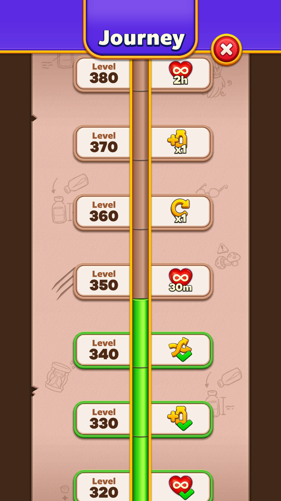
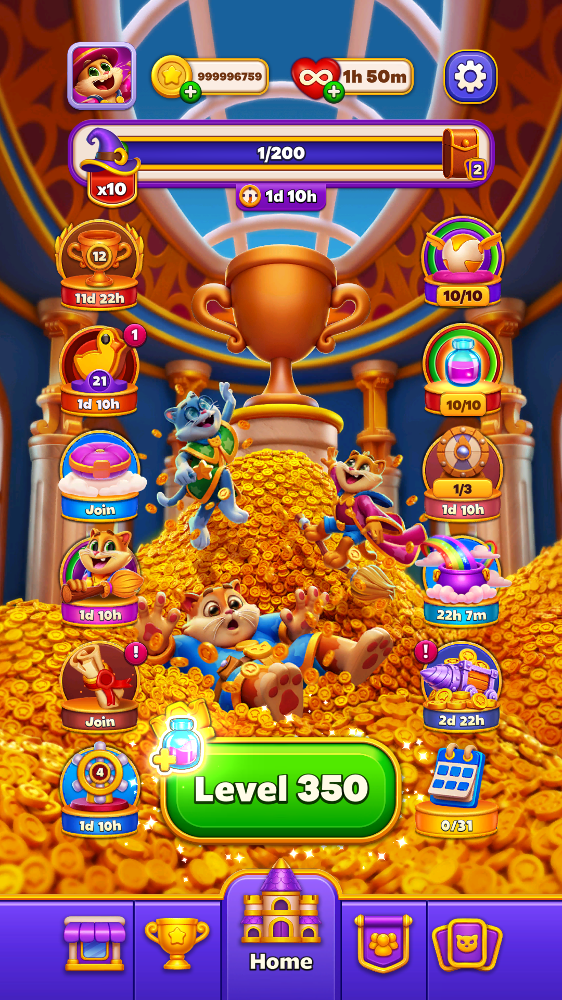
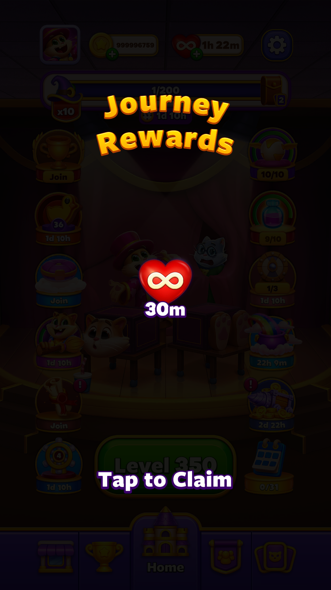

Hành trình (Journey)
Biến level đã vượt thành một hành trình có cảnh nền và phần thưởng, giúp tiến độ không chỉ là một con số trên nút Play.
Chưa có case chính trong hai lượt review 15–16/11. Nội dung theo mã/config; ảnh ngữ cảnh không được tính thành playtest tính năng. Xem bằng chứng và phần còn thiếu.
Thiết kế chi tiết
Tóm tắt thiết kế
Biến level đã vượt thành một hành trình có cảnh nền và phần thưởng, giúp tiến độ không chỉ là một con số trên nút Play.
Xem hành trình → vượt mốc level → nhận quà/mở poster → chọn cảnh Home → tiếp tục mốc lặp.
Lớp diễn giải thiết kế từ source và dossier hiện có; outcome là expected. Quan sát round2 được gọi rõ; chưa phát sinh playtest hoặc xác nhận backend mới.
4 ảnh chụp có nguồn · ảnh hiện ngay trong khung, bấm để mở ảnh gốc. Màu nhãn phân biệt playtest, lịch sử và ngữ cảnh.

 320 mạng vô hạn, 330/340 booster đã nhận có tích xanh, 350 = 30 phút mạng vô hạn,
320 mạng vô hạn, 330/340 booster đã nhận có tích xanh, 350 = 30 phút mạng vô hạn,  360 Undo, 370 +Bottle, 380 2 giờ mạng vô hạn)Ảnh chụp lịch sử · giữ snapshot và điều kiện trong chú thíchHồ sơ ảnh lịch sử
360 Undo, 370 +Bottle, 380 2 giờ mạng vô hạn)Ảnh chụp lịch sử · giữ snapshot và điều kiện trong chú thíchHồ sơ ảnh lịch sử 360 Undo, 370 +Bottle, 380 2 giờ mạng vô hạn, 390 Undo + ShuffleẢnh chụp lịch sử · giữ snapshot và điều kiện trong chú thíchHồ sơ ảnh lịch sử
360 Undo, 370 +Bottle, 380 2 giờ mạng vô hạn, 390 Undo + ShuffleẢnh chụp lịch sử · giữ snapshot và điều kiện trong chú thíchHồ sơ ảnh lịch sửLuồng người chơi từng bước
- 01
Xem vị trí hiện tại
Người chơiMở Journey và cuộn các mốc phía trước.
Điều kiện / luật: Danh sách trộn mốc reward và poster; nội dung đã cấu hình không phải toàn bộ level sinh runtime.
Kết quả theo đặc tả: Người chơi thấy mục tiêu gần tiếp theo.
Nguồn: Journey.json · use_cases/11 - 02
Đổi cảnh Home
Người chơiChọn poster đã mở khóa để dùng làm nền.
Điều kiện / luật: Poster/thumbnail tải dần trong khoảng 20 level; thiếu asset có loading/fallback.
Kết quả theo đặc tả: Lựa chọn nền khác với quyền mở poster.
Nguồn: Journey.json · use_cases/5
Ảnh lịch sử Home level 350: hình nền đổi sang poster mới (phòng cúp vàng) mở khóa theo JourneyẢnh chụp lịch sử · giữ snapshot và điều kiện trong chú thíchHồ sơ ảnh lịch sử - 03
Tiếp tục sau bảng tĩnh
Người chơiVượt phần thưởng cấu hình sẵn.
Điều kiện / luật: LoopRewards dùng LevelInterval sinh mốc lặp; reward Collection không chạy có backoff.
Kết quả theo đặc tả: Không hết mục tiêu chỉ vì qua dòng cuối của bảng tĩnh.
Nguồn: Journey.json · use_cases/6
Quy tắc cần nắm
| Quy tắc | Hành vi theo nguồn | Căn cứ |
|---|---|---|
| Xem vị trí hiện tại | Danh sách trộn mốc reward và poster; nội dung đã cấu hình không phải toàn bộ level sinh runtime. | Nguồn: Journey.json · use_cases/11 |
| Đổi cảnh Home | Poster/thumbnail tải dần trong khoảng 20 level; thiếu asset có loading/fallback. | Nguồn: Journey.json · use_cases/5 |
| Tiếp tục sau bảng tĩnh | LoopRewards dùng LevelInterval sinh mốc lặp; reward Collection không chạy có backoff. | Nguồn: Journey.json · use_cases/6 |
Số liệu & phần thưởng
Phần thưởng
MỐC THƯỞNG THEO LEVEL (JourneyConfigModel.json: JourneyRewardsConfigs, 31 mốc)
| Mốc | Level | Phần thưởng |
|---|---|---|
| Mốc 1 | Level 10 |  100Coin 100Coin |
| Mốc 2 | Level 15 | ∞30 phútUnlimited Lives |
| Mốc 3 | Level 25 | 1 Undo |
| Mốc 4 | Level 30 | 1 giờ Unlimited Lives |
| Mốc 5 | Level 35 |  1 Shuffle 1 Shuffle |
| Mốc 6 | Level 45 |  1 Extra Bottle 1 Extra Bottle |
| Mốc 7 | Level 50 | 200Coin |
| Mốc 8 | Level 55 | 1 giờ Unlimited Lives |
| Mốc 9 | Level 65 | 1 Undo 1 Shuffle |
| Mốc 10 | Level 70 | 1 Extra Bottle |
| Mốc 11 | Level 75 | 1 giờ Unlimited Lives |
| Mốc 12 | Level 85 | 1 Undo |
| Mốc 13 | Level 90 | 1 giờ Unlimited Lives |
| Mốc 14 | Level 95 | 1 Shuffle |
| Mốc 15 | Level 110 | ∞30 phútUnlimited Lives |
| Mốc 16 | Level 120 | 1 Extra Bottle |
| Mốc 17 | Level 130 | 1 Shuffle |
| Mốc 18 | Level 140 | 1 giờ Unlimited Lives |
| Mốc 19 | Level 160 | 250Coin |
| Mốc 20 | Level 170 | 1 Shuffle |
| Mốc 21 | Level 180 | 1 Undo |
| Mốc 22 | Level 190 | 1 Extra Bottle |
| Mốc 23 | Level 210 | 1 giờ Unlimited Lives |
| Mốc 24 | Level 220 | 1 Undo 1 Shuffle |
| Mốc 25 | Level 230 | 1 Extra Bottle |
| Mốc 26 | Level 240 | ∞30 phútUnlimited Lives |
| Mốc 27 | Level 260 | 300Coin |
| Mốc 28 | Level 270 | 1 Undo |
| Mốc 29 | Level 280 | 1 giờ Unlimited Lives |
| Mốc 30 | Level 290 | 1 Shuffle |
| Mốc 31 | Level 310 | 1 Undo |
BỘ THƯỞNG LẶP SAU KHI HẾT BẢNG (JourneyLoopRewardsConfig.Rewards, 18 mốc, mỗi 10 level)
| Vòng lặp | Điều kiện | Phần thưởng |
|---|---|---|
| Mốc lặp 1 | Mỗi LevelInterval = 10 level | 1 giờ Unlimited Lives |
| Mốc lặp 2 | Mỗi LevelInterval = 10 level | 1 Extra Bottle |
| Mốc lặp 3 | Mỗi LevelInterval = 10 level | 1 Shuffle |
| Mốc lặp 4 | Mỗi LevelInterval = 10 level | ∞30 phútUnlimited Lives |
| Mốc lặp 5 | Mỗi LevelInterval = 10 level | 1 Undo |
| Mốc lặp 6 | Mỗi LevelInterval = 10 level | 1 Extra Bottle |
| Mốc lặp 7 | Mỗi LevelInterval = 10 level | 2 giờ Unlimited Lives |
| Mốc lặp 8 | Mỗi LevelInterval = 10 level | 1 Undo 1 Shuffle |
| Mốc lặp 9 | Mỗi LevelInterval = 10 level | 1 Extra Bottle |
| Mốc lặp 10 | Mỗi LevelInterval = 10 level | ∞30 phútUnlimited Lives |
| Mốc lặp 11 | Mỗi LevelInterval = 10 level | 1 Undo 1 Shuffle |
| Mốc lặp 12 | Mỗi LevelInterval = 10 level | 1 Extra Bottle |
| Mốc lặp 13 | Mỗi LevelInterval = 10 level | 1 giờ Unlimited Lives |
| Mốc lặp 14 | Mỗi LevelInterval = 10 level | 1 Undo |
| Mốc lặp 15 | Mỗi LevelInterval = 10 level | 1 Shuffle |
| Mốc lặp 16 | Mỗi LevelInterval = 10 level | 1 giờ Unlimited Lives |
| Mốc lặp 17 | Mỗi LevelInterval = 10 level | 1 Extra Bottle |
| Mốc lặp 18 | Mỗi LevelInterval = 10 level | 1 Shuffle 1 Undo |
MỐC MỞ POSTER (JourneyConfigModel.json: JourneyPosterConfigs, 10 poster)
| Poster | Level mở | LevelRange |
|---|---|---|
| poster1 | Level 1 | 18 |
| poster2 | Level 20 | 19 |
| poster3 | Level 40 | 19 |
| poster4 | Level 60 | 19 |
| poster5 | Level 80 | 19 |
| poster6 | Level 100 | 49 |
| poster7 | Level 150 | 49 |
| poster8 | Level 200 | 49 |
| poster9 | Level 250 | 49 |
| poster10 | Level 300 | 0 |
Phần thưởng theo code
| Ngữ cảnh | Phần thưởng | Evidence |
|---|---|---|
| Mốc thưởng theo level | JourneyRewardsConfig.Rewards (List<RewardModel>) — CurrencyEarnReason.Journey (22) | JourneyService.TryGetRewards |
| Mốc lặp sau khi hết bảng | JourneyLoopRewardsConfig.Rewards mỗi LevelInterval level | JourneyService.TryGenerateLoopConfig |
| Poster | Mở khoá nền Home mới (JourneyPosterConfig.PosterId) | JourneyService.TryGetPoster |
| Thay thế gói thẻ | JourneyConfigModel.CollectionBackoffRewards[packType − 1] mặc định 1 Undo | JourneyService.GetBackoffRewardForBackType |
Số liệu chính
| Chỉ số | Giá trị | Nguồn |
|---|---|---|
| IsEnabled mặc định | true | JourneyConfigModel.json: IsEnabled |
| Số mốc thưởng cấu hình sẵn | 31 | JourneyConfigModel.json: JourneyRewardsConfigs |
| Mốc thưởng đầu tiên | Level 10 đổi  100 coin 100 coin | JourneyConfigModel.json: JourneyRewardsConfigs[0] |
| Mốc thưởng cuối trong bảng | Level 310 đổi 1 Undo | JourneyConfigModel.json: JourneyRewardsConfigs[30] |
| Các mốc coin | Level 10 (100), 50 (200), 160 (250), 260 (300) | JourneyConfigModel.json: JourneyRewardsConfigs |
| Số mốc trong bộ thưởng lặp | 18 | JourneyConfigModel.json: JourneyLoopRewardsConfig.Rewards |
| Khoảng cách giữa hai mốc lặp | 10 level | JourneyConfigModel.json: JourneyLoopRewardsConfig.LevelInterval |
| Bộ đệm khi sinh mốc lặp | 50 level (0x32) | JourneyService.GenerateAdditionalRewardsFromLoop |
| Số poster trong bảng | 10 (poster1 … poster10) | JourneyConfigModel.json: JourneyPosterConfigs |
| Level mở poster | 1, 20, 40, 60, 80, 100, 150, 200, 250, 300 | JourneyConfigModel.json: JourneyPosterConfigs |
| LevelRange của poster | 18 cho poster1; 19 cho poster2–5; 49 cho poster6–9; 0 cho poster10 | JourneyConfigModel.json: JourneyPosterConfigs |
| Poster dự phòng | poster1 | JourneyService.fallback_poster_id |
| Ảnh tạm trong lúc tải | poster_loading | JourneyService.loading_poster_id |
| Phạm vi tải trước poster | 20 level | JourneyService.poster_download_range |
| Hậu tố thumbnail | _thumbnail và poster_loading_thumbnail | JourneyService.PreDownloadAndLoadThumbnails |
| Phần thưởng dự phòng mặc định | 1 Undo (CurrencyType 4) | JourneyService.GetBackoffRewardForBackType |
| Lý do nhận thưởng | CurrencyEarnReason.Journey = 22 | Modules.Contexts.Application.Inventory.Scripts.CurrencyEarnReason |
| Khóa lưu duy nhất | SelectedPosterId | JourneyService.InitializeSelectedPosterId |
| Số trường của config animation mở khóa | 21 | JourneyUnlockAnimationConfig |
| Số trường của view poster | 40 | JourneyPosterElementView |
| Số tên poster có localization | 19 khóa từ JourneyPoster1 tới JourneyPoster17a | appendix/localization.tsv |
| Số sự kiện analytics | 7 | Journey analytics |
Các quyết định trong luồng
| Tình huống | Cách xử lý theo nguồn | Căn cứ |
|---|---|---|
| Vì sao không gộp mở poster với chọn poster? | Một hành động trao quyền, hành động còn lại là tùy biến; phải giữ lựa chọn người chơi qua tải lại. | Nhận định thiết kế từ cơ chế có nguồn; không phải hiệu quả đã đo. |
Nhánh lỗi và phục hồi
| Điều kiện | Hành vi mong đợi | Phạm vi đã kiểm |
|---|---|---|
| Nhánh lỗi, gián đoạn hoặc chuyển trạng thái của Journey (lộ trình & poster) | Offline/tải poster lỗi dùng loading/fallback có nguồn, không đánh dấu poster mới đã tải. | Theo UC/source trong hồ sơ; runtime chỉ có giá trị ở đúng case và snapshot đã liên kết. |
Nhận định & vận dụng
Một hành động trao quyền, hành động còn lại là tùy biến; phải giữ lựa chọn người chơi qua tải lại.
Suy luận thiết kế; không thay bảng cấu hình hoặc giới hạn thực nghiệm.
Ảnh chụp bổ sung & nguồn bằng chứng
Không coi ảnh lịch sử hoặc ảnh ép bật bằng fixture là trạng thái production hiện tại.
Những ảnh còn lại của tính năng được giữ mở sẵn bên dưới. Các ảnh đã đặt ở phần tóm tắt hoặc bước liên quan không lặp lại trong gallery này.


30 phút mạng vô hạn của mốc 350 — Tap to ClaimẢnh chụp lịch sử · giữ snapshot và điều kiện trong chú thíchHồ sơ ảnh lịch sửCase đầy đủ: expected, actual và ledger · Ảnh lịch sử và tài nguyên gốc
Tổng quan & điều kiện mở
Mô tả
- Journey là bản đồ tiến trình theo level: một dải cuộn dọc gồm các mốc thưởng và các mốc mở poster.
- Mỗi poster là một bức tranh nền cho màn Home, mở khóa theo level và người chơi tự chọn poster nào để trưng bày.
- Sau khi vượt hết bảng thưởng cấu hình sẵn, hệ thống tự sinh thêm mốc lặp vô hạn nên Journey không bao giờ hết nội dung.
- Bộ thưởng lặp gồm 18 mốc, phát lại tuần hoàn với khoảng cách mặc định 10 level một mốc.
- Giữa các mốc, danh sách chèn thêm phần tử mây trang trí để dải cuộn không bị trống.
- Poster được tải dần từ CDN theo phạm vi 20 level quanh vị trí hiện tại, có ảnh tạm trong lúc chờ.
- Journey tích hợp Champions League qua poster Master League Area và Collection qua cơ chế thưởng thay thế.
- Khi Collection không chạy, mọi phần thưởng gói thẻ trong bảng bị thay bằng phần thưởng dự phòng tương ứng.
- Journey không có DataService riêng và không đồng bộ; trạng thái đã nhận suy ra từ level, chỉ poster đang chọn được lưu.
Mở khóa & điểm vào
JourneyConfigModel.IsEnabled (remote config, có IsValid() kiểm tra hợp lệ). Không có FirstLevelToShow riêng — Journey bám theo level người chơi; JourneyService.GetSmallestLevelConfig() lấy mốc nhỏ nhất trong JourneyPosterConfigs làm điểm bắt đầu. Popup mở khoá Journey lần đầu do JetpackRace phát: ShowJourneyUnlockPopupCommand / JourneyUnlockPopup.
Điểm vào:
- JourneyButtonController — nút Journey ở Home
- JourneyPopup / JourneyController — màn hình lộ trình cuộn
- JourneyHomePosterHandler — poster đang chọn làm nền Home
- JourneyProgressIndicatorController / JourneyProgressBarController — thanh tiến độ tới mốc kế
- ShowJourneyUnlockPopupCommand (từ Jetpack Race) — popup mở khoá Journey
- PlayJourneyAnimationsCommand — animation nhận thưởng sau khi thắng level
Luồng chi tiết theo nguồn
Cách hoạt động
- Khi khởi tạo, Journey làm ba việc: đọc poster đang chọn, tải trước poster và cập nhật bảng thưởng theo trạng thái Collection (InitializeData).
- Poster đang chọn đọc từ khóa lưu SelectedPosterId; nếu rỗng hoặc không còn trong config thì rơi về poster1.
- Thumbnail được tải trước theo quy ước tên id kèm hậu tố _thumbnail, cùng ảnh chờ poster_loading_thumbnail.
- Phạm vi tải trước là 20 level quanh level hiện tại, và trong lúc chờ hiển thị ảnh tạm poster_loading.
- Danh sách hiển thị được ghép từ ba nguồn: bảng mốc thưởng, bộ thưởng lặp và bảng mốc poster, rồi sắp xếp theo level.
- Mỗi mốc thưởng thành một item có level, danh sách thưởng và cờ đã nhận; mỗi mốc poster thành item có level, LevelRange, posterId cùng cờ đã mở và đang chọn.
- Khi mốc cấu hình đã hết, hệ thống sinh thêm mốc theo bộ lặp với bộ đệm 50 level phía trước (GenerateAdditionalRewardsFromLoop).
- Mỗi lần thắng level, tiến độ Journey được cập nhật và poster mới được tải trước (OnLevelWin, UpdateJourneyProgress).
- Nếu vừa chạm một mốc thưởng, animation trao thưởng chạy với CurrencyEarnReason.Journey (22) và analytics journey_reward_given bắn.
- Nếu vừa mở một poster mới, analytics journey_poster_unlocked ghi lại id poster và level hiện tại.
- Khi người chơi đổi poster, hệ thống lưu id mới, phát tín hiệu và bắn journey_poster_selected kèm poster cũ, poster mới và điều kiện Master League.
- Bảng thưởng được quét để tìm phần thưởng gói thẻ Collection; nếu Collection không chạy thì thay bằng phần thưởng dự phòng theo loại gói.
- Phần thưởng dự phòng lấy theo chỉ số loại gói trừ 1 trong bảng CollectionBackoffRewards, mặc định là 1 Undo khi thiếu phần tử.
- Bộ đo thời gian xem poster gom số liệu rồi gửi journey_poster_time_tracking dưới dạng bảng id và thời gian.
- Popup mở khóa Journey lần đầu không do Journey tự phát mà do Jetpack Race gọi lệnh mở.
- Nút Journey ở Home cùng thanh tiến độ cho biết còn bao xa tới mốc kế tiếp.
Luồng chi tiết theo code
InitializeData() làm 3 việc: InitializeSelectedPosterId(), PreDownloadPosters(), UpdateRewardsForCollection(). InitializeSelectedPosterId() đọc khoá lưu 'SelectedPosterId'; nếu rỗng hoặc poster không còn trong config (CheckSelectedPosterIdExistInConfig) thì rơi về fallback_poster_id = 'poster1'. PreDownloadPosters() tải trước thumbnail (id + '_thumbnail', và 'poster_loading_thumbnail') rồi tải poster đang chọn (PreDownloadAndLoadSelectedPoster); phạm vi tải là poster_download_range = 20 level quanh level hiện tại; trong lúc chờ dùng loading_poster_id = 'poster_loading'. GetJourneyViewModel() dựng danh sách IJourneyItemViewModel bằng MergeTwoModelsIntoIJourneyItemViewModelListSortedByLevel(JourneyRewardsConfigs, JourneyLoopRewardsConfig, JourneyPosterConfigs): mỗi JourneyRewardsConfig{Level, Rewards} thành RewardViewModel{Level, Rewards, IsClaimed}, mỗi JourneyPosterConfig{Level, LevelRange, PosterId} thành PosterViewModel{Level, LevelRange, PosterId, IsClaimed, IsSelected}, xen kẽ CloudViewModel cho khoảng trống. Khi mốc cấu hình đã hết, GenerateAdditionalRewardsFromLoop() / TryGenerateLoopConfig(levelBuffer, highestLevel) sinh thêm mốc theo JourneyLoopRewardsConfig.LevelInterval với bộ đệm 50 level (hằng số 0x32 trong pseudo-C). Mỗi lần thắng level, JourneyService.OnLevelWin() gọi UpdateJourneyProgress() (phát JourneyPreProgressUpdateSignal / JourneyProgressUpdatedSignal) và PreDownloadPosters(); TryGetRewards(level, out rewards) trả thưởng của mốc vừa đạt, PlayJourneyAnimationsCommand chạy animation trao thưởng với CurrencyEarnReason.Journey (22), analytics journey_reward_given. TryGetPoster(level, out posterViewModel) cho biết vừa mở poster mới → analytics journey_poster_unlocked; người chơi chọn poster → SetSelectedPosterId(posterId), phát PosterSelectedSignal, analytics journey_poster_selected. UpdateRewardsForCollection() quét toàn bộ bảng thưởng, tìm phần thưởng CurrencyType.CollectionPack (14) và khi Collection không hoạt động thì thay bằng GetBackoffRewardForBackType(packType) = JourneyConfigModel.CollectionBackoffRewards[packType − 1], mặc định RewardModel{CurrencyType = Undo (4), Amount = 1} nếu mảng thiếu phần tử. JourneyPosterTimeTracker đo thời gian xem từng poster và gửi journey_poster_time_tracking (giá trị 'locked' cho poster chưa mở).
Use case (13)
Đặc tả UC mô tả hành vi theo nguồn. Kết quả mong đợi không phải kết quả đã chạy; case quan sát được liên kết riêng ở từng UC.
Bấm vào từng use case để mở. Mở/đóng tất cả
UC-01 Khởi tạo Journey và chọn poster mặc định
Chưa có case trực tiếp trong hai lượt review 15–16/11.
Các bước- JourneyService.InitializeData() gọi InitializeSelectedPosterId(), PreDownloadPosters(), UpdateRewardsForCollection()
- InitializeSelectedPosterId() đọc khoá lưu 'SelectedPosterId'
- CheckSelectedPosterIdExistInConfig() duyệt JourneyPosterConfigs tìm PosterId khớp
- Không khớp hoặc rỗng → dùng fallback_poster_id = 'poster1' (hoặc GetSmallestLevelConfig().PosterId)
- AwaitLoadingFallbackPoster() chờ tải xong poster dự phòng
| Actor | System |
|---|---|
| Trigger | Khởi động game / InitializeData |
| Điều kiện | JourneyConfigModel.IsEnabled == true và IsValid() |
| Kết quả mong đợi theo nguồn | Home luôn có nền hợp lệ, kể cả khi config đổi và poster cũ bị gỡ |
| Quy tắc / số liệu | Hằng số: fallback_poster_id = "poster1", loading_poster_id = "poster_loading" |
| Bằng chứng đặc tả | JourneyService.InitializeData; JourneyService.InitializeSelectedPosterId; JourneyService.CheckSelectedPosterIdExistInConfig; JourneyService.GetFallbackPosterId; JourneyService.AwaitLoadingFallbackPoster |
UC-02 Tải trước poster và thumbnail
Chưa có case trực tiếp trong hai lượt review 15–16/11.
Các bước- JourneyService.PreDownloadPosters() xác định khoảng level cần tải: poster_download_range = 20
- PreDownloadAndLoadThumbnails() tải các asset '<posterId>_thumbnail' và 'poster_loading_thumbnail'
- PreDownloadAndLoadSelectedPoster() tải bản đầy đủ của poster đang chọn
- TryLoadPoster() nạp vào bộ nhớ; trong lúc chờ hiển thị 'poster_loading'
| Actor | System |
|---|---|
| Trigger | Khởi tạo và mỗi lần thắng level |
| Điều kiện | AssetManager sẵn sàng |
| Kết quả mong đợi theo nguồn | Danh sách Journey cuộn mượt, không thấy ô trắng |
| Quy tắc / số liệu | poster_download_range = 20 (const trong JourneyService) — chỉ tải poster trong ±20 level quanh vị trí hiện tại (suy luận về hướng ±) |
| Bằng chứng đặc tả | JourneyService.PreDownloadPosters; JourneyService.PreDownloadAndLoadThumbnails; JourneyService.PreDownloadAndLoadSelectedPoster; JourneyService.TryLoadPoster; JourneyService.GetLoadingPosterId |
UC-03 Dựng danh sách lộ trình hiển thị
Chưa có case trực tiếp trong hai lượt review 15–16/11.
Các bước- JourneyService.GetJourneyViewModel() → MergeTwoModelsIntoIJourneyItemViewModelListSortedByLevel(rewardsConfigs, journeyLoopRewardsConfig, journeyPosterConfigs)
- CreateItemViewModel(JourneyRewardsConfig) → RewardViewModel{Level, Rewards, IsClaimed}
- CreateItemViewModel(JourneyPosterConfig) → PosterViewModel{Level, LevelRange, PosterId, IsClaimed, IsSelected}
- CloudViewModel{Level, IsClaimed} chèn vào các khoảng trống
- JourneyScrollViewAdapter + JourneyElementViewFactory dựng JourneyRewardElementView / JourneyPosterElementView / JourneyCloudElementView
| Actor | System |
|---|---|
| Trigger | Mở JourneyPopup |
| Điều kiện | - |
| Kết quả mong đợi theo nguồn | Danh sách sắp xếp theo Level tăng dần, trộn mốc thưởng và mốc poster |
| Quy tắc / số liệu | IJourneyItemViewModel là interface chung cho 3 loại item |
| Bằng chứng đặc tả | JourneyService.GetJourneyViewModel; JourneyService.MergeTwoModelsIntoIJourneyItemViewModelListSortedByLevel; JourneyService.CreateItemViewModel; JourneyScrollViewAdapter |
UC-04 Thắng level và nhận thưởng mốc Journey
Chưa có case trực tiếp trong hai lượt review 15–16/11.
Các bước- JourneyService.OnLevelWin() → UpdateJourneyProgress() (Invoke JourneyPreProgressUpdateSignal rồi JourneyProgressUpdatedSignal) và PreDownloadPosters()
- TryGetRewards(level, out List<RewardModel> rewardModel) trả thưởng của mốc
- PlayJourneyAnimationsCommand (Modules.Contexts.GamePlay.Loop.Scripts) chạy PlayJourneyRewards animation
- RewardService trao với CurrencyEarnReason.Journey (22)
- EventSender.SendJourneyRewardGiven(level, currentPosterId, rewards) với journey_reward_given, current_level, current_poster_id, session_count
| Actor | Player |
|---|---|
| Trigger | Hoàn thành một level |
| Điều kiện | Level vừa đạt trùng Level của một JourneyRewardsConfig |
| Kết quả mong đợi theo nguồn | Thưởng vào kho, mốc chuyển IsClaimed = true, thanh tiến độ nhảy sang mốc kế |
| Quy tắc / số liệu | HasRewards() kiểm tra còn mốc chưa nhận để bật badge trên nút Journey |
| Bằng chứng đặc tả | JourneyService.OnLevelWin; JourneyService.UpdateJourneyProgress; JourneyService.TryGetRewards; JourneyService.HasRewards; PlayJourneyAnimationsCommand.PlayJourneyRewards; EventSender.SendJourneyRewardGiven |
UC-05 Mở khoá poster mới
Chưa có case trực tiếp trong hai lượt review 15–16/11.
Các bước- JourneyService.TryGetPoster(level, out posterViewModel) trả poster vừa mở
- GetLastUnlockedPosterId() cho biết poster mới nhất
- JourneyPosterElementView phát animation mở khoá (JourneyUnlockAnimationConfig, 21 field)
- EventSender.SendJourneyPosterUnlocked(level, unlockedPosterId) với journey_poster_unlocked, unlocked_poster_id, current_level
| Actor | Player |
|---|---|
| Trigger | Đạt Level của một JourneyPosterConfig |
| Điều kiện | - |
| Kết quả mong đợi theo nguồn | Poster mới xuất hiện trong danh sách, có thể chọn làm nền Home |
| Quy tắc / số liệu | JourneyPosterConfig có LevelRange bên cạnh Level — đoạn level mà poster này làm nền (suy luận) |
| Bằng chứng đặc tả | JourneyService.TryGetPoster; JourneyService.GetLastUnlockedPosterId; EventSender.SendJourneyPosterUnlocked |
UC-06 Chọn poster làm nền Home
Chưa có case trực tiếp trong hai lượt review 15–16/11.
Các bước- JourneyService.SetSelectedPosterId(posterId) ghi vào khoá lưu 'SelectedPosterId' (_selectedPosterIdKey)
- GetPosterViewModelById(posterId) cấp dữ liệu cho JourneyHomePosterHandler
- Phát PosterSelectedSignal; PreDownloadAndLoadSelectedPoster() tải bản đầy đủ
- EventSender.SendJourneyPosterSelected(oldPosterId, selectedPosterId) với journey_poster_selected, old_poster_id, selected_poster_id, master_league_poster_eligibility
| Actor | Player |
|---|---|
| Trigger | Bấm một poster đã mở trong JourneyPopup |
| Điều kiện | PosterViewModel.IsClaimed == true |
| Kết quả mong đợi theo nguồn | Nền Home đổi sang poster đã chọn |
| Quy tắc / số liệu | Tên poster hiển thị lấy từ localization JourneyPoster1..JourneyPoster17a (ví dụ 'Magic Trouble', 'Broom Flight', 'Sky is the Limit', 'Circus Chaos') |
| Bằng chứng đặc tả | JourneyService.SetSelectedPosterId; JourneyService.GetSelectedPosterId; JourneyService.GetPosterViewModelById; EventSender.SendJourneyPosterSelected |

UC-07 Sinh thêm mốc lặp khi hết bảng cấu hình
Chưa có case trực tiếp trong hai lượt review 15–16/11.
Các bước- JourneyService.GenerateAdditionalRewardsFromLoop() lấy Level cao nhất (b__36_0 chọn c.Level)
- TryGenerateLoopConfig(levelBuffer = 50, highestLevel) sinh thêm mốc cách nhau LevelInterval level
- Mỗi mốc mới dùng JourneyLoopRewardsConfig.Rewards
- Phát JourneyNewRewardsGeneratedSignal
- GetPosterMaxLevel() giới hạn phần poster; TryGeneratePosterConfigs(maxRewardLevel, minLevel, journeyPosterConfigs) sinh phần poster tương ứng
| Actor | System |
|---|---|
| Trigger | Level người chơi vượt quá mốc cao nhất trong JourneyRewardsConfigs |
| Điều kiện | JourneyLoopRewardsConfig.LevelInterval > 0 |
| Kết quả mong đợi theo nguồn | Journey kéo dài vô hạn, người chơi cấp cao vẫn có mốc thưởng đều đặn |
| Quy tắc / số liệu | Bộ đệm 50 level là hằng số trong pseudo-C (0x32) — sinh trước 50 level so với vị trí hiện tại |
| Bằng chứng đặc tả | JourneyService.GenerateAdditionalRewardsFromLoop; JourneyService.TryGenerateLoopConfig; JourneyService.TryGeneratePosterConfigs; JourneyService.GetPosterMaxLevel |
UC-08 Thay thưởng gói thẻ khi Collection không chạy
Chưa có case trực tiếp trong hai lượt review 15–16/11.
Các bước- JourneyService.UpdateRewardsForCollection() duyệt JourneyRewardsConfigs và JourneyLoopRewardsConfig.Rewards
- Với mỗi RewardModel có CurrencyType == 14 (CollectionPack), đọc CollectionPackType
- Nếu CollectionService không hoạt động → GetBackoffRewardForBackType(packType) trả JourneyConfigModel.CollectionBackoffRewards[packType − 1]
- Nếu mảng CollectionBackoffRewards không đủ phần tử → tạo RewardModel mặc định CurrencyType = Undo (4), Amount = 1
| Actor | System |
|---|---|
| Trigger | Khởi tạo hoặc Collection bật/tắt |
| Điều kiện | Bảng thưởng có phần thưởng CurrencyType.CollectionPack (14) |
| Kết quả mong đợi theo nguồn | Người chơi không nhận gói thẻ vô nghĩa khi không có bộ sưu tập nào chạy |
| Quy tắc / số liệu | Giá trị dự phòng cứng: 1 Undo (pseudo-C: obj._CurrencyType = 4; obj._Amount = 1) |
| Bằng chứng đặc tả | JourneyService.UpdateRewardsForCollection; JourneyService.GetBackoffRewardForBackType |
UC-09 Poster Master League của Champions League
Chưa có case trực tiếp trong hai lượt review 15–16/11.
Các bước- ChampionsLeaguePosterView (Modules.Contexts.Home.Journey.Scripts.UI) hiện poster 'Master League Area'
- Người chơi chọn → ChampionsLeagueService.SetPosterSelected(true) và JourneyService.SetSelectedPosterId
- EventSender.SendLeaguePosterSelected(source) → journey_master_league_poster_selected
- Tham số master_league_poster_eligibility trong journey_poster_selected cho biết người chơi có đủ điều kiện hay không
| Actor | Player |
|---|---|
| Trigger | Đủ điều kiện chọn poster giải đấu |
| Điều kiện | ChampionsLeagueService.CanSelectLeaguePoster() == true |
| Kết quả mong đợi theo nguồn | Nền Home đổi sang khu vực Master League |
| Quy tắc / số liệu | JourneyService giữ tham chiếu ChampionsLeagueService để hỏi điều kiện |
| Bằng chứng đặc tả | ChampionsLeagueService.CanSelectLeaguePoster; ChampionsLeaguePosterView; EventSender.SendLeaguePosterSelected; JourneyService..ctor(championsLeagueService) |
UC-10 Theo dõi thời gian xem poster
Chưa có case trực tiếp trong hai lượt review 15–16/11.
Các bước- JourneyPosterTimeTracker tích luỹ thời gian cho từng posterId
- Poster chưa mở ghi giá trị 'locked'
- JourneyService.SendPosterTimeTrackingEvent() → EventSender.SendJourneyPosterTimeTracking(Dictionary<string,string> posterData)
| Actor | System |
|---|---|
| Trigger | Người chơi ở màn Home / mở Journey |
| Điều kiện | - |
| Kết quả mong đợi theo nguồn | Analytics journey_poster_time_tracking cho biết poster nào được xem nhiều |
| Quy tắc / số liệu | Gửi theo phiên (suy luận — không thấy timer cụ thể trong dossier) |
| Bằng chứng đặc tả | JourneyService.SendPosterTimeTrackingEvent; JourneyPosterTimeTracker; EventSender.SendJourneyPosterTimeTracking |
UC-11 Popup mở khoá Journey lần đầu
Chưa có case trực tiếp trong hai lượt review 15–16/11.
Các bước- Modules.Contexts.Home.JetpackRace.Scripts.ShowJourneyUnlockPopupCommand chạy
- JourneyUnlockPopup (+JourneyUnlockPopupArguments) hiển thị giới thiệu
- JourneyButtonController bật nút Journey ở Home
| Actor | System |
|---|---|
| Trigger | Sau khi hoàn thành điều kiện trong Jetpack Race |
| Điều kiện | Journey chưa được giới thiệu |
| Kết quả mong đợi theo nguồn | Người chơi biết Journey vừa mở |
| Quy tắc / số liệu | Popup mở khoá do module JetpackRace sở hữu, không nằm trong namespace Journey |
| Bằng chứng đặc tả | ShowJourneyUnlockPopupCommand; JourneyUnlockPopup; JourneyButtonController |
UC-12 Mở Journey và xem tiến độ
Chưa có case trực tiếp trong hai lượt review 15–16/11.
Các bước- JourneyPopup mở, JourneyController dựng danh sách (struct ClaimInfo theo dõi mốc chờ nhận)
- JourneyProgressBarController / JourneyProgressIndicatorController hiện tiến độ tới mốc kế
- JourneyBackgroundItemLooper, HoveringMotion, CollaborativeAnimationPlayer, AnimatedParticleSystemPlayer, ParticleAnimationPlayer tạo hiệu ứng nền
- EventSender.SendJourneyOpened() → journey_opened
| Actor | Player |
|---|---|
| Trigger | Bấm nút Journey |
| Điều kiện | - |
| Kết quả mong đợi theo nguồn | Người chơi thấy mình đang ở đâu và mốc thưởng kế tiếp là gì |
| Quy tắc / số liệu | - |
| Bằng chứng đặc tả | JourneyService.GetJourneyViewModel; JourneyController; JourneyProgressBarController; EventSender.SendJourneyOpened |
UC-13 Lỗi tải poster / offline
Chưa có case trực tiếp trong hai lượt review 15–16/11.
Các bước- TryLoadPoster() thất bại → giữ 'poster_loading' làm ảnh tạm
- AwaitLoadingFallbackPoster() đảm bảo ít nhất poster1 khả dụng
- PreDownloadPosters() thử lại ở lần thắng level tiếp theo
| Actor | System |
|---|---|
| Trigger | AssetManager không tải được poster từ CDN |
| Điều kiện | - |
| Kết quả mong đợi theo nguồn | Home không bị trống, danh sách Journey vẫn cuộn được với thumbnail chờ |
| Quy tắc / số liệu | Poster được phân phối bằng bundle. Export 0.0.3063 có UI atlas; cache 0.0.3129 đọc ngày 15/11 có poster 4–10 và thumbnail đã giải mã thành PNG cùng graph. Không dùng dữ liệu hình để đánh dấu animation hoặc unlock của mọi poster đã pass. |
| Bằng chứng đặc tả | JourneyService.TryLoadPoster; JourneyService.AwaitLoadingFallbackPoster; JourneyService.GetLoadingPosterId; JourneyService.PreDownloadPosters |
Playtest & phần chưa xác minh
Case ghi lại một chuỗi thao tác và phạm vi quan sát. Các bước chưa chạy và hợp đồng server vẫn giữ trạng thái riêng.
Chưa có case chính trong hai lượt review gần nhất. Xem đặc tả, nguồn và điều kiện cần để kiểm nhánh dưới đây.
Điều kiện cần để kiểm tiếp
Nhánh UC cần kiểm tiếp
Chưa có case vòng 2 cho feature này. Mở Journey từ Home, cuộn mốc đầu/hiện tại/cuối, mở poster đã khóa và đã mở; đổi poster khả dụng rồi restart kiểm persistence.
UC chưa có case: UC-01 UC-02 UC-03 UC-04 UC-05 UC-06 UC-07 UC-08 UC-09 UC-10 UC-11 UC-12 UC-13
Hồ sơ đầy đủ và trạng thái từng nhánh · Báo cáo đối soát 58 mục
Ảnh gốc & tài nguyên trong hồ sơ nền
Ảnh chụp màn hình (4)
4 ảnh chụp trong game (LDPlayer, bản 0.0.3129, tài khoản thử level 321 → 351 (07/10/2026)). Bấm ảnh để phóng to; ảnh chụp lịch sử mở PNG gốc. Nhãn UC dẫn tới use case tương ứng.
 320 mạng vô hạn, 330/340 booster đã nhận có tích xanh, 350 = 30 phút mạng vô hạn, 360 Undo, 370 +Bottle, 380 2 giờ mạng vô hạn)30 phút mạng vô hạn của mốc 350 — Tap to Claim360 Undo, 370 +Bottle, 380 2 giờ mạng vô hạn, 390 Undo + Shuffle
320 mạng vô hạn, 330/340 booster đã nhận có tích xanh, 350 = 30 phút mạng vô hạn, 360 Undo, 370 +Bottle, 380 2 giờ mạng vô hạn)30 phút mạng vô hạn của mốc 350 — Tap to Claim360 Undo, 370 +Bottle, 380 2 giờ mạng vô hạn, 390 Undo + ShuffleSegment & A/B
Trạng thái Collection và league: Đổi reward hoặc cảnh có thể chọn.
| Trục phân nhóm | Điều kiện chọn | Tác động thiết kế | Mức bằng chứng |
|---|---|---|---|
| Trạng thái Collection và league | Collection đang chạy chọn pack/backoff; ChampionsLeague có poster MasterLeague riêng. | Đổi reward hoặc cảnh có thể chọn. | Chưa có bằng chứng A/B của poster hay lịch mốc; CDN load thành công chưa đảm bảo mọi poster đã được quan sát. |
Assignment của tài khoản, tỷ lệ traffic và uplift: chưa được xác minh. Reward bucket, phân khúc thương mại và A/B experiment được phân biệt theo nguồn.
- Chưa có bằng chứng A/B của poster hay lịch mốc; CDN load thành công chưa đảm bảo mọi poster đã được quan sát.
Tải tất cả dòng liên quan của feature · Registry 345 dòng nguồn duy nhất
Dữ liệu đầy đủ theo nguồn
Bản mặc định đóng gói trong APK 0.0.3129. Đây là dữ liệu có kiểu đầy đủ; config thực được server chọn cho một tài khoản là phạm vi khác.
JourneyConfigModel 384 giá trị / node rỗng
| Đường dẫn | Kiểu | Giá trị |
|---|---|---|
| $.IsEnabled | boolean | true |
| $.JourneyRewardsConfigs[0].Level | number | 10 |
| $.JourneyRewardsConfigs[0].Rewards[0].CurrencyType | number | 1 |
| $.JourneyRewardsConfigs[0].Rewards[0].Amount | number | 100 |
| $.JourneyRewardsConfigs[0].Rewards[0].TimeSpan | string | "00:00:00" |
| $.JourneyRewardsConfigs[0].Rewards[0].Rewards | array | [] |
| $.JourneyRewardsConfigs[0].Rewards[0].ChestType | number | 0 |
| $.JourneyRewardsConfigs[1].Level | number | 15 |
| $.JourneyRewardsConfigs[1].Rewards[0].CurrencyType | number | 2 |
| $.JourneyRewardsConfigs[1].Rewards[0].Amount | number | 0 |
| $.JourneyRewardsConfigs[1].Rewards[0].TimeSpan | string | "00:30:00" |
| $.JourneyRewardsConfigs[1].Rewards[0].Rewards | array | [] |
| $.JourneyRewardsConfigs[1].Rewards[0].ChestType | number | 0 |
| $.JourneyRewardsConfigs[2].Level | number | 25 |
| $.JourneyRewardsConfigs[2].Rewards[0].CurrencyType | number | 4 |
| $.JourneyRewardsConfigs[2].Rewards[0].Amount | number | 1 |
| $.JourneyRewardsConfigs[2].Rewards[0].TimeSpan | string | "00:00:00" |
| $.JourneyRewardsConfigs[2].Rewards[0].Rewards | array | [] |
| $.JourneyRewardsConfigs[2].Rewards[0].ChestType | number | 0 |
| $.JourneyRewardsConfigs[3].Level | number | 30 |
| $.JourneyRewardsConfigs[3].Rewards[0].CurrencyType | number | 2 |
| $.JourneyRewardsConfigs[3].Rewards[0].Amount | number | 0 |
| $.JourneyRewardsConfigs[3].Rewards[0].TimeSpan | string | "01:00:00" |
| $.JourneyRewardsConfigs[3].Rewards[0].Rewards | array | [] |
| $.JourneyRewardsConfigs[3].Rewards[0].ChestType | number | 0 |
| $.JourneyRewardsConfigs[4].Level | number | 35 |
| $.JourneyRewardsConfigs[4].Rewards[0].CurrencyType | number | 5 |
| $.JourneyRewardsConfigs[4].Rewards[0].Amount | number | 1 |
| $.JourneyRewardsConfigs[4].Rewards[0].TimeSpan | string | "00:00:00" |
| $.JourneyRewardsConfigs[4].Rewards[0].Rewards | array | [] |
| $.JourneyRewardsConfigs[4].Rewards[0].ChestType | number | 0 |
| $.JourneyRewardsConfigs[5].Level | number | 45 |
| $.JourneyRewardsConfigs[5].Rewards[0].CurrencyType | number | 6 |
| $.JourneyRewardsConfigs[5].Rewards[0].Amount | number | 1 |
| $.JourneyRewardsConfigs[5].Rewards[0].TimeSpan | string | "00:00:00" |
| $.JourneyRewardsConfigs[5].Rewards[0].Rewards | array | [] |
| $.JourneyRewardsConfigs[5].Rewards[0].ChestType | number | 0 |
| $.JourneyRewardsConfigs[6].Level | number | 50 |
| $.JourneyRewardsConfigs[6].Rewards[0].CurrencyType | number | 1 |
| $.JourneyRewardsConfigs[6].Rewards[0].Amount | number | 200 |
| $.JourneyRewardsConfigs[6].Rewards[0].TimeSpan | string | "00:00:00" |
| $.JourneyRewardsConfigs[6].Rewards[0].Rewards | array | [] |
| $.JourneyRewardsConfigs[6].Rewards[0].ChestType | number | 0 |
| $.JourneyRewardsConfigs[7].Level | number | 55 |
| $.JourneyRewardsConfigs[7].Rewards[0].CurrencyType | number | 2 |
| $.JourneyRewardsConfigs[7].Rewards[0].Amount | number | 0 |
| $.JourneyRewardsConfigs[7].Rewards[0].TimeSpan | string | "01:00:00" |
| $.JourneyRewardsConfigs[7].Rewards[0].Rewards | array | [] |
| $.JourneyRewardsConfigs[7].Rewards[0].ChestType | number | 0 |
| $.JourneyRewardsConfigs[8].Level | number | 65 |
| $.JourneyRewardsConfigs[8].Rewards[0].CurrencyType | number | 4 |
| $.JourneyRewardsConfigs[8].Rewards[0].Amount | number | 1 |
| $.JourneyRewardsConfigs[8].Rewards[0].TimeSpan | string | "00:00:00" |
| $.JourneyRewardsConfigs[8].Rewards[0].Rewards | array | [] |
| $.JourneyRewardsConfigs[8].Rewards[0].ChestType | number | 0 |
| $.JourneyRewardsConfigs[8].Rewards[1].CurrencyType | number | 5 |
| $.JourneyRewardsConfigs[8].Rewards[1].Amount | number | 1 |
| $.JourneyRewardsConfigs[8].Rewards[1].TimeSpan | string | "00:00:00" |
| $.JourneyRewardsConfigs[8].Rewards[1].Rewards | array | [] |
| $.JourneyRewardsConfigs[8].Rewards[1].ChestType | number | 0 |
| $.JourneyRewardsConfigs[9].Level | number | 70 |
| $.JourneyRewardsConfigs[9].Rewards[0].CurrencyType | number | 6 |
| $.JourneyRewardsConfigs[9].Rewards[0].Amount | number | 1 |
| $.JourneyRewardsConfigs[9].Rewards[0].TimeSpan | string | "00:00:00" |
| $.JourneyRewardsConfigs[9].Rewards[0].Rewards | array | [] |
| $.JourneyRewardsConfigs[9].Rewards[0].ChestType | number | 0 |
| $.JourneyRewardsConfigs[10].Level | number | 75 |
| $.JourneyRewardsConfigs[10].Rewards[0].CurrencyType | number | 2 |
| $.JourneyRewardsConfigs[10].Rewards[0].Amount | number | 0 |
| $.JourneyRewardsConfigs[10].Rewards[0].TimeSpan | string | "01:00:00" |
| $.JourneyRewardsConfigs[10].Rewards[0].Rewards | array | [] |
| $.JourneyRewardsConfigs[10].Rewards[0].ChestType | number | 0 |
| $.JourneyRewardsConfigs[11].Level | number | 85 |
| $.JourneyRewardsConfigs[11].Rewards[0].CurrencyType | number | 4 |
| $.JourneyRewardsConfigs[11].Rewards[0].Amount | number | 1 |
| $.JourneyRewardsConfigs[11].Rewards[0].TimeSpan | string | "00:00:00" |
| $.JourneyRewardsConfigs[11].Rewards[0].Rewards | array | [] |
| $.JourneyRewardsConfigs[11].Rewards[0].ChestType | number | 0 |
| $.JourneyRewardsConfigs[12].Level | number | 90 |
| $.JourneyRewardsConfigs[12].Rewards[0].CurrencyType | number | 2 |
| $.JourneyRewardsConfigs[12].Rewards[0].Amount | number | 0 |
| $.JourneyRewardsConfigs[12].Rewards[0].TimeSpan | string | "01:00:00" |
| $.JourneyRewardsConfigs[12].Rewards[0].Rewards | array | [] |
| $.JourneyRewardsConfigs[12].Rewards[0].ChestType | number | 0 |
| $.JourneyRewardsConfigs[13].Level | number | 95 |
| $.JourneyRewardsConfigs[13].Rewards[0].CurrencyType | number | 5 |
| $.JourneyRewardsConfigs[13].Rewards[0].Amount | number | 1 |
| $.JourneyRewardsConfigs[13].Rewards[0].TimeSpan | string | "00:00:00" |
| $.JourneyRewardsConfigs[13].Rewards[0].Rewards | array | [] |
| $.JourneyRewardsConfigs[13].Rewards[0].ChestType | number | 0 |
| $.JourneyRewardsConfigs[14].Level | number | 110 |
| $.JourneyRewardsConfigs[14].Rewards[0].CurrencyType | number | 2 |
| $.JourneyRewardsConfigs[14].Rewards[0].Amount | number | 0 |
| $.JourneyRewardsConfigs[14].Rewards[0].TimeSpan | string | "00:30:00" |
| $.JourneyRewardsConfigs[14].Rewards[0].Rewards | array | [] |
| $.JourneyRewardsConfigs[14].Rewards[0].ChestType | number | 0 |
| $.JourneyRewardsConfigs[15].Level | number | 120 |
| $.JourneyRewardsConfigs[15].Rewards[0].CurrencyType | number | 6 |
| $.JourneyRewardsConfigs[15].Rewards[0].Amount | number | 1 |
| $.JourneyRewardsConfigs[15].Rewards[0].TimeSpan | string | "00:00:00" |
| $.JourneyRewardsConfigs[15].Rewards[0].Rewards | array | [] |
| $.JourneyRewardsConfigs[15].Rewards[0].ChestType | number | 0 |
| $.JourneyRewardsConfigs[16].Level | number | 130 |
| $.JourneyRewardsConfigs[16].Rewards[0].CurrencyType | number | 5 |
| $.JourneyRewardsConfigs[16].Rewards[0].Amount | number | 1 |
| $.JourneyRewardsConfigs[16].Rewards[0].TimeSpan | string | "00:00:00" |
| $.JourneyRewardsConfigs[16].Rewards[0].Rewards | array | [] |
| $.JourneyRewardsConfigs[16].Rewards[0].ChestType | number | 0 |
| $.JourneyRewardsConfigs[17].Level | number | 140 |
| $.JourneyRewardsConfigs[17].Rewards[0].CurrencyType | number | 2 |
| $.JourneyRewardsConfigs[17].Rewards[0].Amount | number | 0 |
| $.JourneyRewardsConfigs[17].Rewards[0].TimeSpan | string | "01:00:00" |
| $.JourneyRewardsConfigs[17].Rewards[0].Rewards | array | [] |
| $.JourneyRewardsConfigs[17].Rewards[0].ChestType | number | 0 |
| $.JourneyRewardsConfigs[18].Level | number | 160 |
| $.JourneyRewardsConfigs[18].Rewards[0].CurrencyType | number | 1 |
| $.JourneyRewardsConfigs[18].Rewards[0].Amount | number | 250 |
| $.JourneyRewardsConfigs[18].Rewards[0].TimeSpan | string | "00:00:00" |
| $.JourneyRewardsConfigs[18].Rewards[0].Rewards | array | [] |
| $.JourneyRewardsConfigs[18].Rewards[0].ChestType | number | 0 |
| $.JourneyRewardsConfigs[19].Level | number | 170 |
| $.JourneyRewardsConfigs[19].Rewards[0].CurrencyType | number | 5 |
| $.JourneyRewardsConfigs[19].Rewards[0].Amount | number | 1 |
| $.JourneyRewardsConfigs[19].Rewards[0].TimeSpan | string | "00:00:00" |
| $.JourneyRewardsConfigs[19].Rewards[0].Rewards | array | [] |
| $.JourneyRewardsConfigs[19].Rewards[0].ChestType | number | 0 |
| $.JourneyRewardsConfigs[20].Level | number | 180 |
| $.JourneyRewardsConfigs[20].Rewards[0].CurrencyType | number | 4 |
| $.JourneyRewardsConfigs[20].Rewards[0].Amount | number | 1 |
| $.JourneyRewardsConfigs[20].Rewards[0].TimeSpan | string | "00:00:00" |
| $.JourneyRewardsConfigs[20].Rewards[0].Rewards | array | [] |
| $.JourneyRewardsConfigs[20].Rewards[0].ChestType | number | 0 |
| $.JourneyRewardsConfigs[21].Level | number | 190 |
| $.JourneyRewardsConfigs[21].Rewards[0].CurrencyType | number | 6 |
| $.JourneyRewardsConfigs[21].Rewards[0].Amount | number | 1 |
| $.JourneyRewardsConfigs[21].Rewards[0].TimeSpan | string | "00:00:00" |
| $.JourneyRewardsConfigs[21].Rewards[0].Rewards | array | [] |
| $.JourneyRewardsConfigs[21].Rewards[0].ChestType | number | 0 |
| $.JourneyRewardsConfigs[22].Level | number | 210 |
| $.JourneyRewardsConfigs[22].Rewards[0].CurrencyType | number | 2 |
| $.JourneyRewardsConfigs[22].Rewards[0].Amount | number | 0 |
| $.JourneyRewardsConfigs[22].Rewards[0].TimeSpan | string | "01:00:00" |
| $.JourneyRewardsConfigs[22].Rewards[0].Rewards | array | [] |
| $.JourneyRewardsConfigs[22].Rewards[0].ChestType | number | 0 |
| $.JourneyRewardsConfigs[23].Level | number | 220 |
| $.JourneyRewardsConfigs[23].Rewards[0].CurrencyType | number | 4 |
| $.JourneyRewardsConfigs[23].Rewards[0].Amount | number | 1 |
| $.JourneyRewardsConfigs[23].Rewards[0].TimeSpan | string | "00:00:00" |
| $.JourneyRewardsConfigs[23].Rewards[0].Rewards | array | [] |
| $.JourneyRewardsConfigs[23].Rewards[0].ChestType | number | 0 |
| $.JourneyRewardsConfigs[23].Rewards[1].CurrencyType | number | 5 |
| $.JourneyRewardsConfigs[23].Rewards[1].Amount | number | 1 |
| $.JourneyRewardsConfigs[23].Rewards[1].TimeSpan | string | "00:00:00" |
| $.JourneyRewardsConfigs[23].Rewards[1].Rewards | array | [] |
| $.JourneyRewardsConfigs[23].Rewards[1].ChestType | number | 0 |
| $.JourneyRewardsConfigs[24].Level | number | 230 |
| $.JourneyRewardsConfigs[24].Rewards[0].CurrencyType | number | 6 |
| $.JourneyRewardsConfigs[24].Rewards[0].Amount | number | 1 |
| $.JourneyRewardsConfigs[24].Rewards[0].TimeSpan | string | "00:00:00" |
| $.JourneyRewardsConfigs[24].Rewards[0].Rewards | array | [] |
| $.JourneyRewardsConfigs[24].Rewards[0].ChestType | number | 0 |
| $.JourneyRewardsConfigs[25].Level | number | 240 |
| $.JourneyRewardsConfigs[25].Rewards[0].CurrencyType | number | 2 |
| $.JourneyRewardsConfigs[25].Rewards[0].Amount | number | 1 |
| $.JourneyRewardsConfigs[25].Rewards[0].TimeSpan | string | "00:30:00" |
| $.JourneyRewardsConfigs[25].Rewards[0].Rewards | array | [] |
| $.JourneyRewardsConfigs[25].Rewards[0].ChestType | number | 0 |
| $.JourneyRewardsConfigs[26].Level | number | 260 |
| $.JourneyRewardsConfigs[26].Rewards[0].CurrencyType | number | 1 |
| $.JourneyRewardsConfigs[26].Rewards[0].Amount | number | 300 |
| $.JourneyRewardsConfigs[26].Rewards[0].TimeSpan | string | "00:00:00" |
| $.JourneyRewardsConfigs[26].Rewards[0].Rewards | array | [] |
| $.JourneyRewardsConfigs[26].Rewards[0].ChestType | number | 0 |
| $.JourneyRewardsConfigs[27].Level | number | 270 |
| $.JourneyRewardsConfigs[27].Rewards[0].CurrencyType | number | 4 |
| $.JourneyRewardsConfigs[27].Rewards[0].Amount | number | 1 |
| $.JourneyRewardsConfigs[27].Rewards[0].TimeSpan | string | "00:00:00" |
| $.JourneyRewardsConfigs[27].Rewards[0].Rewards | array | [] |
| $.JourneyRewardsConfigs[27].Rewards[0].ChestType | number | 0 |
| $.JourneyRewardsConfigs[28].Level | number | 280 |
| $.JourneyRewardsConfigs[28].Rewards[0].CurrencyType | number | 2 |
| $.JourneyRewardsConfigs[28].Rewards[0].Amount | number | 0 |
| $.JourneyRewardsConfigs[28].Rewards[0].TimeSpan | string | "01:00:00" |
| $.JourneyRewardsConfigs[28].Rewards[0].Rewards | array | [] |
| $.JourneyRewardsConfigs[28].Rewards[0].ChestType | number | 0 |
| $.JourneyRewardsConfigs[29].Level | number | 290 |
| $.JourneyRewardsConfigs[29].Rewards[0].CurrencyType | number | 5 |
| $.JourneyRewardsConfigs[29].Rewards[0].Amount | number | 1 |
| $.JourneyRewardsConfigs[29].Rewards[0].TimeSpan | string | "00:00:00" |
| $.JourneyRewardsConfigs[29].Rewards[0].Rewards | array | [] |
| $.JourneyRewardsConfigs[29].Rewards[0].ChestType | number | 0 |
| $.JourneyRewardsConfigs[30].Level | number | 310 |
| $.JourneyRewardsConfigs[30].Rewards[0].CurrencyType | number | 4 |
| $.JourneyRewardsConfigs[30].Rewards[0].Amount | number | 1 |
| $.JourneyRewardsConfigs[30].Rewards[0].TimeSpan | string | "00:00:00" |
| $.JourneyRewardsConfigs[30].Rewards[0].Rewards | array | [] |
| $.JourneyRewardsConfigs[30].Rewards[0].ChestType | number | 0 |
| $.JourneyLoopRewardsConfig.LevelInterval | number | 10 |
| $.JourneyLoopRewardsConfig.Rewards[0].CurrencyType | number | 0 |
| $.JourneyLoopRewardsConfig.Rewards[0].Amount | number | 0 |
| $.JourneyLoopRewardsConfig.Rewards[0].TimeSpan | string | "00:00:00" |
| $.JourneyLoopRewardsConfig.Rewards[0].Rewards[0].CurrencyType | number | 2 |
| $.JourneyLoopRewardsConfig.Rewards[0].Rewards[0].Amount | number | 0 |
| $.JourneyLoopRewardsConfig.Rewards[0].Rewards[0].TimeSpan | string | "01:00:00" |
| $.JourneyLoopRewardsConfig.Rewards[0].Rewards[0].ChestType | number | 0 |
| $.JourneyLoopRewardsConfig.Rewards[0].ChestType | number | 0 |
| $.JourneyLoopRewardsConfig.Rewards[1].CurrencyType | number | 0 |
| $.JourneyLoopRewardsConfig.Rewards[1].Amount | number | 0 |
| $.JourneyLoopRewardsConfig.Rewards[1].TimeSpan | string | "00:00:00" |
| $.JourneyLoopRewardsConfig.Rewards[1].Rewards[0].CurrencyType | number | 6 |
| $.JourneyLoopRewardsConfig.Rewards[1].Rewards[0].Amount | number | 1 |
| $.JourneyLoopRewardsConfig.Rewards[1].Rewards[0].TimeSpan | string | "00:00:00" |
| $.JourneyLoopRewardsConfig.Rewards[1].Rewards[0].ChestType | number | 0 |
| $.JourneyLoopRewardsConfig.Rewards[1].ChestType | number | 0 |
| $.JourneyLoopRewardsConfig.Rewards[2].CurrencyType | number | 0 |
| $.JourneyLoopRewardsConfig.Rewards[2].Amount | number | 0 |
| $.JourneyLoopRewardsConfig.Rewards[2].TimeSpan | string | "00:00:00" |
| $.JourneyLoopRewardsConfig.Rewards[2].Rewards[0].CurrencyType | number | 5 |
| $.JourneyLoopRewardsConfig.Rewards[2].Rewards[0].Amount | number | 1 |
| $.JourneyLoopRewardsConfig.Rewards[2].Rewards[0].TimeSpan | string | "00:00:00" |
| $.JourneyLoopRewardsConfig.Rewards[2].Rewards[0].ChestType | number | 0 |
| $.JourneyLoopRewardsConfig.Rewards[2].ChestType | number | 0 |
| $.JourneyLoopRewardsConfig.Rewards[3].CurrencyType | number | 0 |
| $.JourneyLoopRewardsConfig.Rewards[3].Amount | number | 0 |
| $.JourneyLoopRewardsConfig.Rewards[3].TimeSpan | string | "00:00:00" |
| $.JourneyLoopRewardsConfig.Rewards[3].Rewards[0].CurrencyType | number | 2 |
| $.JourneyLoopRewardsConfig.Rewards[3].Rewards[0].Amount | number | 0 |
| $.JourneyLoopRewardsConfig.Rewards[3].Rewards[0].TimeSpan | string | "00:30:00" |
| $.JourneyLoopRewardsConfig.Rewards[3].Rewards[0].ChestType | number | 0 |
| $.JourneyLoopRewardsConfig.Rewards[3].ChestType | number | 0 |
| $.JourneyLoopRewardsConfig.Rewards[4].CurrencyType | number | 0 |
| $.JourneyLoopRewardsConfig.Rewards[4].Amount | number | 0 |
| $.JourneyLoopRewardsConfig.Rewards[4].TimeSpan | string | "00:00:00" |
| $.JourneyLoopRewardsConfig.Rewards[4].Rewards[0].CurrencyType | number | 4 |
| $.JourneyLoopRewardsConfig.Rewards[4].Rewards[0].Amount | number | 1 |
| $.JourneyLoopRewardsConfig.Rewards[4].Rewards[0].TimeSpan | string | "00:00:00" |
| $.JourneyLoopRewardsConfig.Rewards[4].Rewards[0].ChestType | number | 0 |
| $.JourneyLoopRewardsConfig.Rewards[4].ChestType | number | 0 |
| $.JourneyLoopRewardsConfig.Rewards[5].CurrencyType | number | 0 |
| $.JourneyLoopRewardsConfig.Rewards[5].Amount | number | 0 |
| $.JourneyLoopRewardsConfig.Rewards[5].TimeSpan | string | "00:00:00" |
| $.JourneyLoopRewardsConfig.Rewards[5].Rewards[0].CurrencyType | number | 6 |
| $.JourneyLoopRewardsConfig.Rewards[5].Rewards[0].Amount | number | 1 |
| $.JourneyLoopRewardsConfig.Rewards[5].Rewards[0].TimeSpan | string | "00:00:00" |
| $.JourneyLoopRewardsConfig.Rewards[5].Rewards[0].ChestType | number | 0 |
| $.JourneyLoopRewardsConfig.Rewards[5].ChestType | number | 0 |
| $.JourneyLoopRewardsConfig.Rewards[6].CurrencyType | number | 0 |
| $.JourneyLoopRewardsConfig.Rewards[6].Amount | number | 0 |
| $.JourneyLoopRewardsConfig.Rewards[6].TimeSpan | string | "00:00:00" |
| $.JourneyLoopRewardsConfig.Rewards[6].Rewards[0].CurrencyType | number | 2 |
| $.JourneyLoopRewardsConfig.Rewards[6].Rewards[0].Amount | number | 0 |
| $.JourneyLoopRewardsConfig.Rewards[6].Rewards[0].TimeSpan | string | "02:00:00" |
| $.JourneyLoopRewardsConfig.Rewards[6].Rewards[0].ChestType | number | 0 |
| $.JourneyLoopRewardsConfig.Rewards[6].ChestType | number | 0 |
| $.JourneyLoopRewardsConfig.Rewards[7].CurrencyType | number | 0 |
| $.JourneyLoopRewardsConfig.Rewards[7].Amount | number | 0 |
| $.JourneyLoopRewardsConfig.Rewards[7].TimeSpan | string | "00:00:00" |
| $.JourneyLoopRewardsConfig.Rewards[7].Rewards[0].CurrencyType | number | 4 |
| $.JourneyLoopRewardsConfig.Rewards[7].Rewards[0].Amount | number | 1 |
| $.JourneyLoopRewardsConfig.Rewards[7].Rewards[0].TimeSpan | string | "00:00:00" |
| $.JourneyLoopRewardsConfig.Rewards[7].Rewards[0].ChestType | number | 0 |
| $.JourneyLoopRewardsConfig.Rewards[7].Rewards[1].CurrencyType | number | 5 |
| $.JourneyLoopRewardsConfig.Rewards[7].Rewards[1].Amount | number | 1 |
| $.JourneyLoopRewardsConfig.Rewards[7].Rewards[1].TimeSpan | string | "00:00:00" |
| $.JourneyLoopRewardsConfig.Rewards[7].Rewards[1].ChestType | number | 0 |
| $.JourneyLoopRewardsConfig.Rewards[7].ChestType | number | 0 |
| $.JourneyLoopRewardsConfig.Rewards[8].CurrencyType | number | 0 |
| $.JourneyLoopRewardsConfig.Rewards[8].Amount | number | 0 |
| $.JourneyLoopRewardsConfig.Rewards[8].TimeSpan | string | "00:00:00" |
| $.JourneyLoopRewardsConfig.Rewards[8].Rewards[0].CurrencyType | number | 6 |
| $.JourneyLoopRewardsConfig.Rewards[8].Rewards[0].Amount | number | 1 |
| $.JourneyLoopRewardsConfig.Rewards[8].Rewards[0].TimeSpan | string | "00:00:00" |
| $.JourneyLoopRewardsConfig.Rewards[8].Rewards[0].ChestType | number | 0 |
| $.JourneyLoopRewardsConfig.Rewards[8].ChestType | number | 0 |
| $.JourneyLoopRewardsConfig.Rewards[9].CurrencyType | number | 0 |
| $.JourneyLoopRewardsConfig.Rewards[9].Amount | number | 0 |
| $.JourneyLoopRewardsConfig.Rewards[9].TimeSpan | string | "00:00:00" |
| $.JourneyLoopRewardsConfig.Rewards[9].Rewards[0].CurrencyType | number | 2 |
| $.JourneyLoopRewardsConfig.Rewards[9].Rewards[0].Amount | number | 0 |
| $.JourneyLoopRewardsConfig.Rewards[9].Rewards[0].TimeSpan | string | "00:30:00" |
| $.JourneyLoopRewardsConfig.Rewards[9].Rewards[0].ChestType | number | 0 |
| $.JourneyLoopRewardsConfig.Rewards[9].ChestType | number | 0 |
| $.JourneyLoopRewardsConfig.Rewards[10].CurrencyType | number | 0 |
| $.JourneyLoopRewardsConfig.Rewards[10].Amount | number | 0 |
| $.JourneyLoopRewardsConfig.Rewards[10].TimeSpan | string | "00:00:00" |
| $.JourneyLoopRewardsConfig.Rewards[10].Rewards[0].CurrencyType | number | 4 |
| $.JourneyLoopRewardsConfig.Rewards[10].Rewards[0].Amount | number | 1 |
| $.JourneyLoopRewardsConfig.Rewards[10].Rewards[0].TimeSpan | string | "00:00:00" |
| $.JourneyLoopRewardsConfig.Rewards[10].Rewards[0].ChestType | number | 0 |
| $.JourneyLoopRewardsConfig.Rewards[10].Rewards[1].CurrencyType | number | 5 |
| $.JourneyLoopRewardsConfig.Rewards[10].Rewards[1].Amount | number | 1 |
| $.JourneyLoopRewardsConfig.Rewards[10].Rewards[1].TimeSpan | string | "00:00:00" |
| $.JourneyLoopRewardsConfig.Rewards[10].Rewards[1].ChestType | number | 0 |
| $.JourneyLoopRewardsConfig.Rewards[10].ChestType | number | 0 |
| $.JourneyLoopRewardsConfig.Rewards[11].CurrencyType | number | 0 |
| $.JourneyLoopRewardsConfig.Rewards[11].Amount | number | 0 |
| $.JourneyLoopRewardsConfig.Rewards[11].TimeSpan | string | "00:00:00" |
| $.JourneyLoopRewardsConfig.Rewards[11].Rewards[0].CurrencyType | number | 6 |
| $.JourneyLoopRewardsConfig.Rewards[11].Rewards[0].Amount | number | 1 |
| $.JourneyLoopRewardsConfig.Rewards[11].Rewards[0].TimeSpan | string | "00:00:00" |
| $.JourneyLoopRewardsConfig.Rewards[11].Rewards[0].ChestType | number | 0 |
| $.JourneyLoopRewardsConfig.Rewards[11].ChestType | number | 0 |
| $.JourneyLoopRewardsConfig.Rewards[12].CurrencyType | number | 0 |
| $.JourneyLoopRewardsConfig.Rewards[12].Amount | number | 0 |
| $.JourneyLoopRewardsConfig.Rewards[12].TimeSpan | string | "00:00:00" |
| $.JourneyLoopRewardsConfig.Rewards[12].Rewards[0].CurrencyType | number | 2 |
| $.JourneyLoopRewardsConfig.Rewards[12].Rewards[0].Amount | number | 0 |
| $.JourneyLoopRewardsConfig.Rewards[12].Rewards[0].TimeSpan | string | "01:00:00" |
| $.JourneyLoopRewardsConfig.Rewards[12].Rewards[0].ChestType | number | 0 |
| $.JourneyLoopRewardsConfig.Rewards[12].ChestType | number | 0 |
| $.JourneyLoopRewardsConfig.Rewards[13].CurrencyType | number | 0 |
| $.JourneyLoopRewardsConfig.Rewards[13].Amount | number | 0 |
| $.JourneyLoopRewardsConfig.Rewards[13].TimeSpan | string | "00:00:00" |
| $.JourneyLoopRewardsConfig.Rewards[13].Rewards[0].CurrencyType | number | 4 |
| $.JourneyLoopRewardsConfig.Rewards[13].Rewards[0].Amount | number | 1 |
| $.JourneyLoopRewardsConfig.Rewards[13].Rewards[0].TimeSpan | string | "00:00:00" |
| $.JourneyLoopRewardsConfig.Rewards[13].Rewards[0].ChestType | number | 0 |
| $.JourneyLoopRewardsConfig.Rewards[13].ChestType | number | 0 |
| $.JourneyLoopRewardsConfig.Rewards[14].CurrencyType | number | 0 |
| $.JourneyLoopRewardsConfig.Rewards[14].Amount | number | 0 |
| $.JourneyLoopRewardsConfig.Rewards[14].TimeSpan | string | "00:00:00" |
| $.JourneyLoopRewardsConfig.Rewards[14].Rewards[0].CurrencyType | number | 5 |
| $.JourneyLoopRewardsConfig.Rewards[14].Rewards[0].Amount | number | 1 |
| $.JourneyLoopRewardsConfig.Rewards[14].Rewards[0].TimeSpan | string | "00:00:00" |
| $.JourneyLoopRewardsConfig.Rewards[14].Rewards[0].ChestType | number | 0 |
| $.JourneyLoopRewardsConfig.Rewards[14].ChestType | number | 0 |
| $.JourneyLoopRewardsConfig.Rewards[15].CurrencyType | number | 0 |
| $.JourneyLoopRewardsConfig.Rewards[15].Amount | number | 0 |
| $.JourneyLoopRewardsConfig.Rewards[15].TimeSpan | string | "00:00:00" |
| $.JourneyLoopRewardsConfig.Rewards[15].Rewards[0].CurrencyType | number | 2 |
| $.JourneyLoopRewardsConfig.Rewards[15].Rewards[0].Amount | number | 0 |
| $.JourneyLoopRewardsConfig.Rewards[15].Rewards[0].TimeSpan | string | "01:00:00" |
| $.JourneyLoopRewardsConfig.Rewards[15].Rewards[0].ChestType | number | 0 |
| $.JourneyLoopRewardsConfig.Rewards[15].ChestType | number | 0 |
| $.JourneyLoopRewardsConfig.Rewards[16].CurrencyType | number | 0 |
| $.JourneyLoopRewardsConfig.Rewards[16].Amount | number | 0 |
| $.JourneyLoopRewardsConfig.Rewards[16].TimeSpan | string | "00:00:00" |
| $.JourneyLoopRewardsConfig.Rewards[16].Rewards[0].CurrencyType | number | 6 |
| $.JourneyLoopRewardsConfig.Rewards[16].Rewards[0].Amount | number | 1 |
| $.JourneyLoopRewardsConfig.Rewards[16].Rewards[0].TimeSpan | string | "00:00:00" |
| $.JourneyLoopRewardsConfig.Rewards[16].Rewards[0].ChestType | number | 0 |
| $.JourneyLoopRewardsConfig.Rewards[16].ChestType | number | 0 |
| $.JourneyLoopRewardsConfig.Rewards[17].CurrencyType | number | 0 |
| $.JourneyLoopRewardsConfig.Rewards[17].Amount | number | 0 |
| $.JourneyLoopRewardsConfig.Rewards[17].TimeSpan | string | "00:00:00" |
| $.JourneyLoopRewardsConfig.Rewards[17].Rewards[0].CurrencyType | number | 5 |
| $.JourneyLoopRewardsConfig.Rewards[17].Rewards[0].Amount | number | 1 |
| $.JourneyLoopRewardsConfig.Rewards[17].Rewards[0].TimeSpan | string | "00:00:00" |
| $.JourneyLoopRewardsConfig.Rewards[17].Rewards[0].ChestType | number | 0 |
| $.JourneyLoopRewardsConfig.Rewards[17].Rewards[1].CurrencyType | number | 4 |
| $.JourneyLoopRewardsConfig.Rewards[17].Rewards[1].Amount | number | 1 |
| $.JourneyLoopRewardsConfig.Rewards[17].Rewards[1].TimeSpan | string | "00:00:00" |
| $.JourneyLoopRewardsConfig.Rewards[17].Rewards[1].ChestType | number | 0 |
| $.JourneyLoopRewardsConfig.Rewards[17].ChestType | number | 0 |
| $.JourneyPosterConfigs[0].Level | number | 1 |
| $.JourneyPosterConfigs[0].LevelRange | number | 18 |
| $.JourneyPosterConfigs[0].PosterId | string | "poster1" |
| $.JourneyPosterConfigs[1].Level | number | 20 |
| $.JourneyPosterConfigs[1].LevelRange | number | 19 |
| $.JourneyPosterConfigs[1].PosterId | string | "poster2" |
| $.JourneyPosterConfigs[2].Level | number | 40 |
| $.JourneyPosterConfigs[2].LevelRange | number | 19 |
| $.JourneyPosterConfigs[2].PosterId | string | "poster3" |
| $.JourneyPosterConfigs[3].Level | number | 60 |
| $.JourneyPosterConfigs[3].LevelRange | number | 19 |
| $.JourneyPosterConfigs[3].PosterId | string | "poster4" |
| $.JourneyPosterConfigs[4].Level | number | 80 |
| $.JourneyPosterConfigs[4].LevelRange | number | 19 |
| $.JourneyPosterConfigs[4].PosterId | string | "poster5" |
| $.JourneyPosterConfigs[5].Level | number | 100 |
| $.JourneyPosterConfigs[5].LevelRange | number | 49 |
| $.JourneyPosterConfigs[5].PosterId | string | "poster6" |
| $.JourneyPosterConfigs[6].Level | number | 150 |
| $.JourneyPosterConfigs[6].LevelRange | number | 49 |
| $.JourneyPosterConfigs[6].PosterId | string | "poster7" |
| $.JourneyPosterConfigs[7].Level | number | 200 |
| $.JourneyPosterConfigs[7].LevelRange | number | 49 |
| $.JourneyPosterConfigs[7].PosterId | string | "poster8" |
| $.JourneyPosterConfigs[8].Level | number | 250 |
| $.JourneyPosterConfigs[8].LevelRange | number | 49 |
| $.JourneyPosterConfigs[8].PosterId | string | "poster9" |
| $.JourneyPosterConfigs[9].Level | number | 300 |
| $.JourneyPosterConfigs[9].LevelRange | number | 0 |
| $.JourneyPosterConfigs[9].PosterId | string | "poster10" |
473 dòng cấu hình theo tất cả nguồn
Bảng nền có thể chứa preview giới hạn đã ghi nhãn. Model mặc định đầy đủ có kiểu ở trên; trường không có trong model giữ nguồn và trạng thái riêng.
Cấu hình (473)
Gộp mọi nguồn: const trong code, JSON mặc định trong Resources, bảng static, storage key, AB test, cờ server.
| Nguồn | Key | Kiểu | Giá trị | Ý nghĩa | Nơi định nghĩa |
|---|---|---|---|---|---|
| code const | JourneyService.fallback_poster_id | string | "poster1" | Poster dự phòng khi id đang chọn không hợp lệ | JourneyService |
| code const | JourneyService.loading_poster_id | string | "poster_loading" | Ảnh tạm trong lúc tải | JourneyService |
| code const | JourneyService.poster_download_range | int | 20 | Số level quanh vị trí hiện tại được tải trước poster | JourneyService.PreDownloadPosters |
| code const | Thumbnail suffix | string | "_thumbnail", "poster_loading_thumbnail" | Tên asset thumbnail | JourneyService.PreDownloadAndLoadThumbnails |
| code const | levelBuffer khi sinh mốc lặp | int | 50 (0x32) | Số level sinh trước cho vòng lặp thưởng | JourneyService.GenerateAdditionalRewardsFromLoop (pseudo-C) |
| code const | Backoff reward mặc định | RewardModel | CurrencyType = Undo (4), Amount = 1 | Thay cho gói thẻ khi CollectionBackoffRewards thiếu phần tử | JourneyService.GetBackoffRewardForBackType |
| storage key | SelectedPosterId | string | client | Poster người chơi đang trưng bày | JourneyService.InitializeSelectedPosterId (_selectedPosterIdKey) |
| Default/code0.0.3063 and historical caches20260910/20261010; per-snapshot source/hash in snapshot_values; not effective-runtime proof | JourneyConfigModel.IsEnabled | bool | default_0.0.3063: true; cache_20260910: true; cache_20261010: true; firebase_20260910: true | Bật/tắt Journey [15/11: giá trị theo snapshot cụ thể; thiếu field khác với false/0. Không xác nhận assignment hoặc effective runtime.] | RemoteConfigs → JourneyConfigModel.IsValid |
| server info | JourneyConfigModel.JourneyRewardsConfigs | JourneyRewardsConfig[]{Level, Rewards} | server | Bảng mốc thưởng theo level | JourneyService.TryGetRewards |
| server info | JourneyConfigModel.JourneyLoopRewardsConfig | JourneyLoopRewardsConfig{LevelInterval, Rewards} | server | Bộ thưởng lặp mỗi LevelInterval level sau khi hết bảng cấu hình | JourneyService.TryGenerateLoopConfig |
| server info | JourneyConfigModel.JourneyPosterConfigs | JourneyPosterConfig[]{Level, LevelRange, PosterId} | server | Bảng mốc mở poster | JourneyService.TryGetPoster / TryGeneratePosterConfigs |
| server info | JourneyConfigModel.CollectionBackoffRewards | RewardModel[] | server (index = packType − 1) | Thưởng thay thế cho từng loại gói thẻ khi Collection tắt | JourneyService.GetBackoffRewardForBackType |
| code const | CurrencyEarnReason.Journey | enum | 22 | Lý do nhận thưởng ghi vào analytics 'earned' | Modules.Contexts.Application.Inventory.Scripts.CurrencyEarnReason |
| asset | JourneyUnlockAnimationConfig (21 field) | ScriptableObject | asset | Tham số animation mở khoá poster/mốc | Modules.Contexts.GamePlay.BoardItems.Scripts.Blob.JourneyUnlockAnimationConfig |
| code const | Localization poster | string | JourneyPoster1 'Magic Trouble'; JourneyPoster1a 'Sky is the Limit'; JourneyPoster2 'Broom Flight'; JourneyPoster2a 'School Jam'; JourneyPoster3 'Purr-tal Jump'; JourneyPoster3a 'Star Seekers'; JourneyPoster4 'Sky is the Limit'; JourneyPoster4a 'Creative Paws'; JourneyPoster5 'Slimey'; JourneyPoster5a 'Potion Commotion'; JourneyPoster10 / 10a 'Grand Illusion'; JourneyPoster11a 'Bee Aware!'; JourneyPoster12a 'Bedtime Spells'; JourneyPoster13a 'Birthday Cake'; JourneyPoster14a 'Treasure Tinkers'; JourneyPoster15a 'Make a Wish'; JourneyPoster16a 'Toyroom Hideout'; JourneyPoster17a 'Circus Chaos' | Tên hiển thị của poster | appendix/localization.tsv |
| code field | JourneyService._selectedPosterId / _loopedRewardIndex / _journeyPosterTimeTracker | field | runtime | Poster đang chọn, chỉ số mốc lặp hiện tại, bộ đo thời gian xem | JourneyService |
| json default | JourneyConfigModel.json: IsEnabled | true | Resources/defaultconfigs/JourneyConfigModel.json (client default, remote config ghi đè) | ||
| json default | JourneyConfigModel.json: JourneyRewardsConfigs[0].Level | 10 | Resources/defaultconfigs/JourneyConfigModel.json (client default, remote config ghi đè) | ||
| json default | JourneyConfigModel.json: JourneyRewardsConfigs[0].Rewards[0].CurrencyType | 1 | Resources/defaultconfigs/JourneyConfigModel.json (client default, remote config ghi đè) | ||
| json default | JourneyConfigModel.json: JourneyRewardsConfigs[0].Rewards[0].Amount | 100 | Resources/defaultconfigs/JourneyConfigModel.json (client default, remote config ghi đè) | ||
| json default | JourneyConfigModel.json: JourneyRewardsConfigs[0].Rewards[0].TimeSpan | 00:00:00 | Resources/defaultconfigs/JourneyConfigModel.json (client default, remote config ghi đè) | ||
| json default | JourneyConfigModel.json: JourneyRewardsConfigs[0].Rewards[0].Rewards | [] | Resources/defaultconfigs/JourneyConfigModel.json (client default, remote config ghi đè) | ||
| json default | JourneyConfigModel.json: JourneyRewardsConfigs[0].Rewards[0].ChestType | 0 | Resources/defaultconfigs/JourneyConfigModel.json (client default, remote config ghi đè) | ||
| json default | JourneyConfigModel.json: JourneyRewardsConfigs[1].Level | 15 | Resources/defaultconfigs/JourneyConfigModel.json (client default, remote config ghi đè) | ||
| json default | JourneyConfigModel.json: JourneyRewardsConfigs[1].Rewards[0].CurrencyType | 2 | Resources/defaultconfigs/JourneyConfigModel.json (client default, remote config ghi đè) | ||
| json default | JourneyConfigModel.json: JourneyRewardsConfigs[1].Rewards[0].Amount | 0 | Resources/defaultconfigs/JourneyConfigModel.json (client default, remote config ghi đè) | ||
| json default | JourneyConfigModel.json: JourneyRewardsConfigs[1].Rewards[0].TimeSpan | 00:30:00 | Resources/defaultconfigs/JourneyConfigModel.json (client default, remote config ghi đè) | ||
| json default | JourneyConfigModel.json: JourneyRewardsConfigs[1].Rewards[0].Rewards | [] | Resources/defaultconfigs/JourneyConfigModel.json (client default, remote config ghi đè) | ||
| json default | JourneyConfigModel.json: JourneyRewardsConfigs[1].Rewards[0].ChestType | 0 | Resources/defaultconfigs/JourneyConfigModel.json (client default, remote config ghi đè) | ||
| json default | JourneyConfigModel.json: JourneyRewardsConfigs[2].Level | 25 | Resources/defaultconfigs/JourneyConfigModel.json (client default, remote config ghi đè) | ||
| json default | JourneyConfigModel.json: JourneyRewardsConfigs[2].Rewards[0].CurrencyType | 4 | Resources/defaultconfigs/JourneyConfigModel.json (client default, remote config ghi đè) | ||
| json default | JourneyConfigModel.json: JourneyRewardsConfigs[2].Rewards[0].Amount | 1 | Resources/defaultconfigs/JourneyConfigModel.json (client default, remote config ghi đè) | ||
| json default | JourneyConfigModel.json: JourneyRewardsConfigs[2].Rewards[0].TimeSpan | 00:00:00 | Resources/defaultconfigs/JourneyConfigModel.json (client default, remote config ghi đè) | ||
| json default | JourneyConfigModel.json: JourneyRewardsConfigs[2].Rewards[0].Rewards | [] | Resources/defaultconfigs/JourneyConfigModel.json (client default, remote config ghi đè) | ||
| json default | JourneyConfigModel.json: JourneyRewardsConfigs[2].Rewards[0].ChestType | 0 | Resources/defaultconfigs/JourneyConfigModel.json (client default, remote config ghi đè) | ||
| json default | JourneyConfigModel.json: JourneyRewardsConfigs[3].Level | 30 | Resources/defaultconfigs/JourneyConfigModel.json (client default, remote config ghi đè) | ||
| json default | JourneyConfigModel.json: JourneyRewardsConfigs[3].Rewards[0].CurrencyType | 2 | Resources/defaultconfigs/JourneyConfigModel.json (client default, remote config ghi đè) | ||
| json default | JourneyConfigModel.json: JourneyRewardsConfigs[3].Rewards[0].Amount | 0 | Resources/defaultconfigs/JourneyConfigModel.json (client default, remote config ghi đè) | ||
| json default | JourneyConfigModel.json: JourneyRewardsConfigs[3].Rewards[0].TimeSpan | 01:00:00 | Resources/defaultconfigs/JourneyConfigModel.json (client default, remote config ghi đè) | ||
| json default | JourneyConfigModel.json: JourneyRewardsConfigs[3].Rewards[0].Rewards | [] | Resources/defaultconfigs/JourneyConfigModel.json (client default, remote config ghi đè) | ||
| json default | JourneyConfigModel.json: JourneyRewardsConfigs[3].Rewards[0].ChestType | 0 | Resources/defaultconfigs/JourneyConfigModel.json (client default, remote config ghi đè) | ||
| json default | JourneyConfigModel.json: JourneyRewardsConfigs[4].Level | 35 | Resources/defaultconfigs/JourneyConfigModel.json (client default, remote config ghi đè) | ||
| json default | JourneyConfigModel.json: JourneyRewardsConfigs[4].Rewards[0].CurrencyType | 5 | Resources/defaultconfigs/JourneyConfigModel.json (client default, remote config ghi đè) | ||
| json default | JourneyConfigModel.json: JourneyRewardsConfigs[4].Rewards[0].Amount | 1 | Resources/defaultconfigs/JourneyConfigModel.json (client default, remote config ghi đè) | ||
| json default | JourneyConfigModel.json: JourneyRewardsConfigs[4].Rewards[0].TimeSpan | 00:00:00 | Resources/defaultconfigs/JourneyConfigModel.json (client default, remote config ghi đè) | ||
| json default | JourneyConfigModel.json: JourneyRewardsConfigs[4].Rewards[0].Rewards | [] | Resources/defaultconfigs/JourneyConfigModel.json (client default, remote config ghi đè) | ||
| json default | JourneyConfigModel.json: JourneyRewardsConfigs[4].Rewards[0].ChestType | 0 | Resources/defaultconfigs/JourneyConfigModel.json (client default, remote config ghi đè) | ||
| json default | JourneyConfigModel.json: JourneyRewardsConfigs[5].Level | 45 | Resources/defaultconfigs/JourneyConfigModel.json (client default, remote config ghi đè) | ||
| json default | JourneyConfigModel.json: JourneyRewardsConfigs[5].Rewards[0].CurrencyType | 6 | Resources/defaultconfigs/JourneyConfigModel.json (client default, remote config ghi đè) | ||
| json default | JourneyConfigModel.json: JourneyRewardsConfigs[5].Rewards[0].Amount | 1 | Resources/defaultconfigs/JourneyConfigModel.json (client default, remote config ghi đè) | ||
| json default | JourneyConfigModel.json: JourneyRewardsConfigs[5].Rewards[0].TimeSpan | 00:00:00 | Resources/defaultconfigs/JourneyConfigModel.json (client default, remote config ghi đè) | ||
| json default | JourneyConfigModel.json: JourneyRewardsConfigs[5].Rewards[0].Rewards | [] | Resources/defaultconfigs/JourneyConfigModel.json (client default, remote config ghi đè) | ||
| json default | JourneyConfigModel.json: JourneyRewardsConfigs[5].Rewards[0].ChestType | 0 | Resources/defaultconfigs/JourneyConfigModel.json (client default, remote config ghi đè) | ||
| json default | JourneyConfigModel.json: JourneyRewardsConfigs[6].Level | 50 | Resources/defaultconfigs/JourneyConfigModel.json (client default, remote config ghi đè) | ||
| json default | JourneyConfigModel.json: JourneyRewardsConfigs[6].Rewards[0].CurrencyType | 1 | Resources/defaultconfigs/JourneyConfigModel.json (client default, remote config ghi đè) | ||
| json default | JourneyConfigModel.json: JourneyRewardsConfigs[6].Rewards[0].Amount | 200 | Resources/defaultconfigs/JourneyConfigModel.json (client default, remote config ghi đè) | ||
| json default | JourneyConfigModel.json: JourneyRewardsConfigs[6].Rewards[0].TimeSpan | 00:00:00 | Resources/defaultconfigs/JourneyConfigModel.json (client default, remote config ghi đè) | ||
| json default | JourneyConfigModel.json: JourneyRewardsConfigs[6].Rewards[0].Rewards | [] | Resources/defaultconfigs/JourneyConfigModel.json (client default, remote config ghi đè) | ||
| json default | JourneyConfigModel.json: JourneyRewardsConfigs[6].Rewards[0].ChestType | 0 | Resources/defaultconfigs/JourneyConfigModel.json (client default, remote config ghi đè) | ||
| json default | JourneyConfigModel.json: JourneyRewardsConfigs[7].Level | 55 | Resources/defaultconfigs/JourneyConfigModel.json (client default, remote config ghi đè) | ||
| json default | JourneyConfigModel.json: JourneyRewardsConfigs[7].Rewards[0].CurrencyType | 2 | Resources/defaultconfigs/JourneyConfigModel.json (client default, remote config ghi đè) | ||
| json default | JourneyConfigModel.json: JourneyRewardsConfigs[7].Rewards[0].Amount | 0 | Resources/defaultconfigs/JourneyConfigModel.json (client default, remote config ghi đè) | ||
| json default | JourneyConfigModel.json: JourneyRewardsConfigs[7].Rewards[0].TimeSpan | 01:00:00 | Resources/defaultconfigs/JourneyConfigModel.json (client default, remote config ghi đè) | ||
| json default | JourneyConfigModel.json: JourneyRewardsConfigs[7].Rewards[0].Rewards | [] | Resources/defaultconfigs/JourneyConfigModel.json (client default, remote config ghi đè) | ||
| json default | JourneyConfigModel.json: JourneyRewardsConfigs[7].Rewards[0].ChestType | 0 | Resources/defaultconfigs/JourneyConfigModel.json (client default, remote config ghi đè) | ||
| json default | JourneyConfigModel.json: JourneyRewardsConfigs[8].Level | 65 | Resources/defaultconfigs/JourneyConfigModel.json (client default, remote config ghi đè) | ||
| json default | JourneyConfigModel.json: JourneyRewardsConfigs[8].Rewards[0].CurrencyType | 4 | Resources/defaultconfigs/JourneyConfigModel.json (client default, remote config ghi đè) | ||
| json default | JourneyConfigModel.json: JourneyRewardsConfigs[8].Rewards[0].Amount | 1 | Resources/defaultconfigs/JourneyConfigModel.json (client default, remote config ghi đè) | ||
| json default | JourneyConfigModel.json: JourneyRewardsConfigs[8].Rewards[0].TimeSpan | 00:00:00 | Resources/defaultconfigs/JourneyConfigModel.json (client default, remote config ghi đè) | ||
| json default | JourneyConfigModel.json: JourneyRewardsConfigs[8].Rewards[0].Rewards | [] | Resources/defaultconfigs/JourneyConfigModel.json (client default, remote config ghi đè) | ||
| json default | JourneyConfigModel.json: JourneyRewardsConfigs[8].Rewards[0].ChestType | 0 | Resources/defaultconfigs/JourneyConfigModel.json (client default, remote config ghi đè) | ||
| json default | JourneyConfigModel.json: JourneyRewardsConfigs[8].Rewards[1].CurrencyType | 5 | Resources/defaultconfigs/JourneyConfigModel.json (client default, remote config ghi đè) | ||
| json default | JourneyConfigModel.json: JourneyRewardsConfigs[8].Rewards[1].Amount | 1 | Resources/defaultconfigs/JourneyConfigModel.json (client default, remote config ghi đè) | ||
| json default | JourneyConfigModel.json: JourneyRewardsConfigs[8].Rewards[1].TimeSpan | 00:00:00 | Resources/defaultconfigs/JourneyConfigModel.json (client default, remote config ghi đè) | ||
| json default | JourneyConfigModel.json: JourneyRewardsConfigs[8].Rewards[1].Rewards | [] | Resources/defaultconfigs/JourneyConfigModel.json (client default, remote config ghi đè) | ||
| json default | JourneyConfigModel.json: JourneyRewardsConfigs[8].Rewards[1].ChestType | 0 | Resources/defaultconfigs/JourneyConfigModel.json (client default, remote config ghi đè) | ||
| json default | JourneyConfigModel.json: JourneyRewardsConfigs[9].Level | 70 | Resources/defaultconfigs/JourneyConfigModel.json (client default, remote config ghi đè) | ||
| json default | JourneyConfigModel.json: JourneyRewardsConfigs[9].Rewards[0].CurrencyType | 6 | Resources/defaultconfigs/JourneyConfigModel.json (client default, remote config ghi đè) | ||
| json default | JourneyConfigModel.json: JourneyRewardsConfigs[9].Rewards[0].Amount | 1 | Resources/defaultconfigs/JourneyConfigModel.json (client default, remote config ghi đè) | ||
| json default | JourneyConfigModel.json: JourneyRewardsConfigs[9].Rewards[0].TimeSpan | 00:00:00 | Resources/defaultconfigs/JourneyConfigModel.json (client default, remote config ghi đè) | ||
| json default | JourneyConfigModel.json: JourneyRewardsConfigs[9].Rewards[0].Rewards | [] | Resources/defaultconfigs/JourneyConfigModel.json (client default, remote config ghi đè) | ||
| json default | JourneyConfigModel.json: JourneyRewardsConfigs[9].Rewards[0].ChestType | 0 | Resources/defaultconfigs/JourneyConfigModel.json (client default, remote config ghi đè) | ||
| json default | JourneyConfigModel.json: JourneyRewardsConfigs[10].Level | 75 | Resources/defaultconfigs/JourneyConfigModel.json (client default, remote config ghi đè) | ||
| json default | JourneyConfigModel.json: JourneyRewardsConfigs[10].Rewards[0].CurrencyType | 2 | Resources/defaultconfigs/JourneyConfigModel.json (client default, remote config ghi đè) | ||
| json default | JourneyConfigModel.json: JourneyRewardsConfigs[10].Rewards[0].Amount | 0 | Resources/defaultconfigs/JourneyConfigModel.json (client default, remote config ghi đè) | ||
| json default | JourneyConfigModel.json: JourneyRewardsConfigs[10].Rewards[0].TimeSpan | 01:00:00 | Resources/defaultconfigs/JourneyConfigModel.json (client default, remote config ghi đè) | ||
| json default | JourneyConfigModel.json: JourneyRewardsConfigs[10].Rewards[0].Rewards | [] | Resources/defaultconfigs/JourneyConfigModel.json (client default, remote config ghi đè) | ||
| json default | JourneyConfigModel.json: JourneyRewardsConfigs[10].Rewards[0].ChestType | 0 | Resources/defaultconfigs/JourneyConfigModel.json (client default, remote config ghi đè) | ||
| json default | JourneyConfigModel.json: JourneyRewardsConfigs[11].Level | 85 | Resources/defaultconfigs/JourneyConfigModel.json (client default, remote config ghi đè) | ||
| json default | JourneyConfigModel.json: JourneyRewardsConfigs[11].Rewards[0].CurrencyType | 4 | Resources/defaultconfigs/JourneyConfigModel.json (client default, remote config ghi đè) | ||
| json default | JourneyConfigModel.json: JourneyRewardsConfigs[11].Rewards[0].Amount | 1 | Resources/defaultconfigs/JourneyConfigModel.json (client default, remote config ghi đè) | ||
| json default | JourneyConfigModel.json: JourneyRewardsConfigs[11].Rewards[0].TimeSpan | 00:00:00 | Resources/defaultconfigs/JourneyConfigModel.json (client default, remote config ghi đè) | ||
| json default | JourneyConfigModel.json: JourneyRewardsConfigs[11].Rewards[0].Rewards | [] | Resources/defaultconfigs/JourneyConfigModel.json (client default, remote config ghi đè) | ||
| json default | JourneyConfigModel.json: JourneyRewardsConfigs[11].Rewards[0].ChestType | 0 | Resources/defaultconfigs/JourneyConfigModel.json (client default, remote config ghi đè) | ||
| json default | JourneyConfigModel.json: JourneyRewardsConfigs[12].Level | 90 | Resources/defaultconfigs/JourneyConfigModel.json (client default, remote config ghi đè) | ||
| json default | JourneyConfigModel.json: JourneyRewardsConfigs[12].Rewards[0].CurrencyType | 2 | Resources/defaultconfigs/JourneyConfigModel.json (client default, remote config ghi đè) | ||
| json default | JourneyConfigModel.json: JourneyRewardsConfigs[12].Rewards[0].Amount | 0 | Resources/defaultconfigs/JourneyConfigModel.json (client default, remote config ghi đè) | ||
| json default | JourneyConfigModel.json: JourneyRewardsConfigs[12].Rewards[0].TimeSpan | 01:00:00 | Resources/defaultconfigs/JourneyConfigModel.json (client default, remote config ghi đè) | ||
| json default | JourneyConfigModel.json: JourneyRewardsConfigs[12].Rewards[0].Rewards | [] | Resources/defaultconfigs/JourneyConfigModel.json (client default, remote config ghi đè) | ||
| json default | JourneyConfigModel.json: JourneyRewardsConfigs[12].Rewards[0].ChestType | 0 | Resources/defaultconfigs/JourneyConfigModel.json (client default, remote config ghi đè) | ||
| json default | JourneyConfigModel.json: JourneyRewardsConfigs[13].Level | 95 | Resources/defaultconfigs/JourneyConfigModel.json (client default, remote config ghi đè) | ||
| json default | JourneyConfigModel.json: JourneyRewardsConfigs[13].Rewards[0].CurrencyType | 5 | Resources/defaultconfigs/JourneyConfigModel.json (client default, remote config ghi đè) | ||
| json default | JourneyConfigModel.json: JourneyRewardsConfigs[13].Rewards[0].Amount | 1 | Resources/defaultconfigs/JourneyConfigModel.json (client default, remote config ghi đè) | ||
| json default | JourneyConfigModel.json: JourneyRewardsConfigs[13].Rewards[0].TimeSpan | 00:00:00 | Resources/defaultconfigs/JourneyConfigModel.json (client default, remote config ghi đè) | ||
| json default | JourneyConfigModel.json: JourneyRewardsConfigs[13].Rewards[0].Rewards | [] | Resources/defaultconfigs/JourneyConfigModel.json (client default, remote config ghi đè) | ||
| json default | JourneyConfigModel.json: JourneyRewardsConfigs[13].Rewards[0].ChestType | 0 | Resources/defaultconfigs/JourneyConfigModel.json (client default, remote config ghi đè) | ||
| json default | JourneyConfigModel.json: JourneyRewardsConfigs[14].Level | 110 | Resources/defaultconfigs/JourneyConfigModel.json (client default, remote config ghi đè) | ||
| json default | JourneyConfigModel.json: JourneyRewardsConfigs[14].Rewards[0].CurrencyType | 2 | Resources/defaultconfigs/JourneyConfigModel.json (client default, remote config ghi đè) | ||
| json default | JourneyConfigModel.json: JourneyRewardsConfigs[14].Rewards[0].Amount | 0 | Resources/defaultconfigs/JourneyConfigModel.json (client default, remote config ghi đè) | ||
| json default | JourneyConfigModel.json: JourneyRewardsConfigs[14].Rewards[0].TimeSpan | 00:30:00 | Resources/defaultconfigs/JourneyConfigModel.json (client default, remote config ghi đè) | ||
| json default | JourneyConfigModel.json: JourneyRewardsConfigs[14].Rewards[0].Rewards | [] | Resources/defaultconfigs/JourneyConfigModel.json (client default, remote config ghi đè) | ||
| json default | JourneyConfigModel.json: JourneyRewardsConfigs[14].Rewards[0].ChestType | 0 | Resources/defaultconfigs/JourneyConfigModel.json (client default, remote config ghi đè) | ||
| json default | JourneyConfigModel.json: JourneyRewardsConfigs[15].Level | 120 | Resources/defaultconfigs/JourneyConfigModel.json (client default, remote config ghi đè) | ||
| json default | JourneyConfigModel.json: JourneyRewardsConfigs[15].Rewards[0].CurrencyType | 6 | Resources/defaultconfigs/JourneyConfigModel.json (client default, remote config ghi đè) | ||
| json default | JourneyConfigModel.json: JourneyRewardsConfigs[15].Rewards[0].Amount | 1 | Resources/defaultconfigs/JourneyConfigModel.json (client default, remote config ghi đè) | ||
| json default | JourneyConfigModel.json: JourneyRewardsConfigs[15].Rewards[0].TimeSpan | 00:00:00 | Resources/defaultconfigs/JourneyConfigModel.json (client default, remote config ghi đè) | ||
| json default | JourneyConfigModel.json: JourneyRewardsConfigs[15].Rewards[0].Rewards | [] | Resources/defaultconfigs/JourneyConfigModel.json (client default, remote config ghi đè) | ||
| json default | JourneyConfigModel.json: JourneyRewardsConfigs[15].Rewards[0].ChestType | 0 | Resources/defaultconfigs/JourneyConfigModel.json (client default, remote config ghi đè) | ||
| json default | JourneyConfigModel.json: JourneyRewardsConfigs[16].Level | 130 | Resources/defaultconfigs/JourneyConfigModel.json (client default, remote config ghi đè) | ||
| json default | JourneyConfigModel.json: JourneyRewardsConfigs[16].Rewards[0].CurrencyType | 5 | Resources/defaultconfigs/JourneyConfigModel.json (client default, remote config ghi đè) | ||
| json default | JourneyConfigModel.json: JourneyRewardsConfigs[16].Rewards[0].Amount | 1 | Resources/defaultconfigs/JourneyConfigModel.json (client default, remote config ghi đè) | ||
| json default | JourneyConfigModel.json: JourneyRewardsConfigs[16].Rewards[0].TimeSpan | 00:00:00 | Resources/defaultconfigs/JourneyConfigModel.json (client default, remote config ghi đè) | ||
| json default | JourneyConfigModel.json: JourneyRewardsConfigs[16].Rewards[0].Rewards | [] | Resources/defaultconfigs/JourneyConfigModel.json (client default, remote config ghi đè) | ||
| json default | JourneyConfigModel.json: JourneyRewardsConfigs[16].Rewards[0].ChestType | 0 | Resources/defaultconfigs/JourneyConfigModel.json (client default, remote config ghi đè) | ||
| json default | JourneyConfigModel.json: JourneyRewardsConfigs[17].Level | 140 | Resources/defaultconfigs/JourneyConfigModel.json (client default, remote config ghi đè) | ||
| json default | JourneyConfigModel.json: JourneyRewardsConfigs[17].Rewards[0].CurrencyType | 2 | Resources/defaultconfigs/JourneyConfigModel.json (client default, remote config ghi đè) | ||
| json default | JourneyConfigModel.json: JourneyRewardsConfigs[17].Rewards[0].Amount | 0 | Resources/defaultconfigs/JourneyConfigModel.json (client default, remote config ghi đè) | ||
| json default | JourneyConfigModel.json: JourneyRewardsConfigs[17].Rewards[0].TimeSpan | 01:00:00 | Resources/defaultconfigs/JourneyConfigModel.json (client default, remote config ghi đè) | ||
| json default | JourneyConfigModel.json: JourneyRewardsConfigs[17].Rewards[0].Rewards | [] | Resources/defaultconfigs/JourneyConfigModel.json (client default, remote config ghi đè) | ||
| json default | JourneyConfigModel.json: JourneyRewardsConfigs[17].Rewards[0].ChestType | 0 | Resources/defaultconfigs/JourneyConfigModel.json (client default, remote config ghi đè) | ||
| json default | JourneyConfigModel.json: JourneyRewardsConfigs[18].Level | 160 | Resources/defaultconfigs/JourneyConfigModel.json (client default, remote config ghi đè) | ||
| json default | JourneyConfigModel.json: JourneyRewardsConfigs[18].Rewards[0].CurrencyType | 1 | Resources/defaultconfigs/JourneyConfigModel.json (client default, remote config ghi đè) | ||
| json default | JourneyConfigModel.json: JourneyRewardsConfigs[18].Rewards[0].Amount | 250 | Resources/defaultconfigs/JourneyConfigModel.json (client default, remote config ghi đè) | ||
| json default | JourneyConfigModel.json: JourneyRewardsConfigs[18].Rewards[0].TimeSpan | 00:00:00 | Resources/defaultconfigs/JourneyConfigModel.json (client default, remote config ghi đè) | ||
| json default | JourneyConfigModel.json: JourneyRewardsConfigs[18].Rewards[0].Rewards | [] | Resources/defaultconfigs/JourneyConfigModel.json (client default, remote config ghi đè) | ||
| json default | JourneyConfigModel.json: JourneyRewardsConfigs[18].Rewards[0].ChestType | 0 | Resources/defaultconfigs/JourneyConfigModel.json (client default, remote config ghi đè) | ||
| json default | JourneyConfigModel.json: JourneyRewardsConfigs[19].Level | 170 | Resources/defaultconfigs/JourneyConfigModel.json (client default, remote config ghi đè) | ||
| json default | JourneyConfigModel.json: JourneyRewardsConfigs[19].Rewards[0].CurrencyType | 5 | Resources/defaultconfigs/JourneyConfigModel.json (client default, remote config ghi đè) | ||
| json default | JourneyConfigModel.json: JourneyRewardsConfigs[19].Rewards[0].Amount | 1 | Resources/defaultconfigs/JourneyConfigModel.json (client default, remote config ghi đè) | ||
| json default | JourneyConfigModel.json: JourneyRewardsConfigs[19].Rewards[0].TimeSpan | 00:00:00 | Resources/defaultconfigs/JourneyConfigModel.json (client default, remote config ghi đè) | ||
| json default | JourneyConfigModel.json: JourneyRewardsConfigs[19].Rewards[0].Rewards | [] | Resources/defaultconfigs/JourneyConfigModel.json (client default, remote config ghi đè) | ||
| json default | JourneyConfigModel.json: JourneyRewardsConfigs[19].Rewards[0].ChestType | 0 | Resources/defaultconfigs/JourneyConfigModel.json (client default, remote config ghi đè) | ||
| json default | JourneyConfigModel.json: JourneyRewardsConfigs[20].Level | 180 | Resources/defaultconfigs/JourneyConfigModel.json (client default, remote config ghi đè) | ||
| json default | JourneyConfigModel.json: JourneyRewardsConfigs[20].Rewards[0].CurrencyType | 4 | Resources/defaultconfigs/JourneyConfigModel.json (client default, remote config ghi đè) | ||
| json default | JourneyConfigModel.json: JourneyRewardsConfigs[20].Rewards[0].Amount | 1 | Resources/defaultconfigs/JourneyConfigModel.json (client default, remote config ghi đè) | ||
| json default | JourneyConfigModel.json: JourneyRewardsConfigs[20].Rewards[0].TimeSpan | 00:00:00 | Resources/defaultconfigs/JourneyConfigModel.json (client default, remote config ghi đè) | ||
| json default | JourneyConfigModel.json: JourneyRewardsConfigs[20].Rewards[0].Rewards | [] | Resources/defaultconfigs/JourneyConfigModel.json (client default, remote config ghi đè) | ||
| json default | JourneyConfigModel.json: JourneyRewardsConfigs[20].Rewards[0].ChestType | 0 | Resources/defaultconfigs/JourneyConfigModel.json (client default, remote config ghi đè) | ||
| json default | JourneyConfigModel.json: JourneyRewardsConfigs[21].Level | 190 | Resources/defaultconfigs/JourneyConfigModel.json (client default, remote config ghi đè) | ||
| json default | JourneyConfigModel.json: JourneyRewardsConfigs[21].Rewards[0].CurrencyType | 6 | Resources/defaultconfigs/JourneyConfigModel.json (client default, remote config ghi đè) | ||
| json default | JourneyConfigModel.json: JourneyRewardsConfigs[21].Rewards[0].Amount | 1 | Resources/defaultconfigs/JourneyConfigModel.json (client default, remote config ghi đè) | ||
| json default | JourneyConfigModel.json: JourneyRewardsConfigs[21].Rewards[0].TimeSpan | 00:00:00 | Resources/defaultconfigs/JourneyConfigModel.json (client default, remote config ghi đè) | ||
| json default | JourneyConfigModel.json: JourneyRewardsConfigs[21].Rewards[0].Rewards | [] | Resources/defaultconfigs/JourneyConfigModel.json (client default, remote config ghi đè) | ||
| json default | JourneyConfigModel.json: JourneyRewardsConfigs[21].Rewards[0].ChestType | 0 | Resources/defaultconfigs/JourneyConfigModel.json (client default, remote config ghi đè) | ||
| json default | JourneyConfigModel.json: JourneyRewardsConfigs[22].Level | 210 | Resources/defaultconfigs/JourneyConfigModel.json (client default, remote config ghi đè) | ||
| json default | JourneyConfigModel.json: JourneyRewardsConfigs[22].Rewards[0].CurrencyType | 2 | Resources/defaultconfigs/JourneyConfigModel.json (client default, remote config ghi đè) | ||
| json default | JourneyConfigModel.json: JourneyRewardsConfigs[22].Rewards[0].Amount | 0 | Resources/defaultconfigs/JourneyConfigModel.json (client default, remote config ghi đè) | ||
| json default | JourneyConfigModel.json: JourneyRewardsConfigs[22].Rewards[0].TimeSpan | 01:00:00 | Resources/defaultconfigs/JourneyConfigModel.json (client default, remote config ghi đè) | ||
| json default | JourneyConfigModel.json: JourneyRewardsConfigs[22].Rewards[0].Rewards | [] | Resources/defaultconfigs/JourneyConfigModel.json (client default, remote config ghi đè) | ||
| json default | JourneyConfigModel.json: JourneyRewardsConfigs[22].Rewards[0].ChestType | 0 | Resources/defaultconfigs/JourneyConfigModel.json (client default, remote config ghi đè) | ||
| json default | JourneyConfigModel.json: JourneyRewardsConfigs[23].Level | 220 | Resources/defaultconfigs/JourneyConfigModel.json (client default, remote config ghi đè) | ||
| json default | JourneyConfigModel.json: JourneyRewardsConfigs[23].Rewards[0].CurrencyType | 4 | Resources/defaultconfigs/JourneyConfigModel.json (client default, remote config ghi đè) | ||
| json default | JourneyConfigModel.json: JourneyRewardsConfigs[23].Rewards[0].Amount | 1 | Resources/defaultconfigs/JourneyConfigModel.json (client default, remote config ghi đè) | ||
| json default | JourneyConfigModel.json: JourneyRewardsConfigs[23].Rewards[0].TimeSpan | 00:00:00 | Resources/defaultconfigs/JourneyConfigModel.json (client default, remote config ghi đè) | ||
| json default | JourneyConfigModel.json: JourneyRewardsConfigs[23].Rewards[0].Rewards | [] | Resources/defaultconfigs/JourneyConfigModel.json (client default, remote config ghi đè) | ||
| json default | JourneyConfigModel.json: JourneyRewardsConfigs[23].Rewards[0].ChestType | 0 | Resources/defaultconfigs/JourneyConfigModel.json (client default, remote config ghi đè) | ||
| json default | JourneyConfigModel.json: JourneyRewardsConfigs[23].Rewards[1].CurrencyType | 5 | Resources/defaultconfigs/JourneyConfigModel.json (client default, remote config ghi đè) | ||
| json default | JourneyConfigModel.json: JourneyRewardsConfigs[23].Rewards[1].Amount | 1 | Resources/defaultconfigs/JourneyConfigModel.json (client default, remote config ghi đè) | ||
| json default | JourneyConfigModel.json: JourneyRewardsConfigs[23].Rewards[1].TimeSpan | 00:00:00 | Resources/defaultconfigs/JourneyConfigModel.json (client default, remote config ghi đè) | ||
| json default | JourneyConfigModel.json: JourneyRewardsConfigs[23].Rewards[1].Rewards | [] | Resources/defaultconfigs/JourneyConfigModel.json (client default, remote config ghi đè) | ||
| json default | JourneyConfigModel.json: JourneyRewardsConfigs[23].Rewards[1].ChestType | 0 | Resources/defaultconfigs/JourneyConfigModel.json (client default, remote config ghi đè) | ||
| json default | JourneyConfigModel.json: JourneyRewardsConfigs[24].Level | 230 | Resources/defaultconfigs/JourneyConfigModel.json (client default, remote config ghi đè) | ||
| json default | JourneyConfigModel.json: JourneyRewardsConfigs[24].Rewards[0].CurrencyType | 6 | Resources/defaultconfigs/JourneyConfigModel.json (client default, remote config ghi đè) | ||
| json default | JourneyConfigModel.json: JourneyRewardsConfigs[24].Rewards[0].Amount | 1 | Resources/defaultconfigs/JourneyConfigModel.json (client default, remote config ghi đè) | ||
| json default | JourneyConfigModel.json: JourneyRewardsConfigs[24].Rewards[0].TimeSpan | 00:00:00 | Resources/defaultconfigs/JourneyConfigModel.json (client default, remote config ghi đè) | ||
| json default | JourneyConfigModel.json: JourneyRewardsConfigs[24].Rewards[0].Rewards | [] | Resources/defaultconfigs/JourneyConfigModel.json (client default, remote config ghi đè) | ||
| json default | JourneyConfigModel.json: JourneyRewardsConfigs[24].Rewards[0].ChestType | 0 | Resources/defaultconfigs/JourneyConfigModel.json (client default, remote config ghi đè) | ||
| json default | JourneyConfigModel.json: JourneyRewardsConfigs[25].Level | 240 | Resources/defaultconfigs/JourneyConfigModel.json (client default, remote config ghi đè) | ||
| json default | JourneyConfigModel.json: JourneyRewardsConfigs[25].Rewards[0].CurrencyType | 2 | Resources/defaultconfigs/JourneyConfigModel.json (client default, remote config ghi đè) | ||
| json default | JourneyConfigModel.json: JourneyRewardsConfigs[25].Rewards[0].Amount | 1 | Resources/defaultconfigs/JourneyConfigModel.json (client default, remote config ghi đè) | ||
| json default | JourneyConfigModel.json: JourneyRewardsConfigs[25].Rewards[0].TimeSpan | 00:30:00 | Resources/defaultconfigs/JourneyConfigModel.json (client default, remote config ghi đè) | ||
| json default | JourneyConfigModel.json: JourneyRewardsConfigs[25].Rewards[0].Rewards | [] | Resources/defaultconfigs/JourneyConfigModel.json (client default, remote config ghi đè) | ||
| json default | JourneyConfigModel.json: JourneyRewardsConfigs[25].Rewards[0].ChestType | 0 | Resources/defaultconfigs/JourneyConfigModel.json (client default, remote config ghi đè) | ||
| json default | JourneyConfigModel.json: JourneyRewardsConfigs[26].Level | 260 | Resources/defaultconfigs/JourneyConfigModel.json (client default, remote config ghi đè) | ||
| json default | JourneyConfigModel.json: JourneyRewardsConfigs[26].Rewards[0].CurrencyType | 1 | Resources/defaultconfigs/JourneyConfigModel.json (client default, remote config ghi đè) | ||
| json default | JourneyConfigModel.json: JourneyRewardsConfigs[26].Rewards[0].Amount | 300 | Resources/defaultconfigs/JourneyConfigModel.json (client default, remote config ghi đè) | ||
| json default | JourneyConfigModel.json: JourneyRewardsConfigs[26].Rewards[0].TimeSpan | 00:00:00 | Resources/defaultconfigs/JourneyConfigModel.json (client default, remote config ghi đè) | ||
| json default | JourneyConfigModel.json: JourneyRewardsConfigs[26].Rewards[0].Rewards | [] | Resources/defaultconfigs/JourneyConfigModel.json (client default, remote config ghi đè) | ||
| json default | JourneyConfigModel.json: JourneyRewardsConfigs[26].Rewards[0].ChestType | 0 | Resources/defaultconfigs/JourneyConfigModel.json (client default, remote config ghi đè) | ||
| json default | JourneyConfigModel.json: JourneyRewardsConfigs[27].Level | 270 | Resources/defaultconfigs/JourneyConfigModel.json (client default, remote config ghi đè) | ||
| json default | JourneyConfigModel.json: JourneyRewardsConfigs[27].Rewards[0].CurrencyType | 4 | Resources/defaultconfigs/JourneyConfigModel.json (client default, remote config ghi đè) | ||
| json default | JourneyConfigModel.json: JourneyRewardsConfigs[27].Rewards[0].Amount | 1 | Resources/defaultconfigs/JourneyConfigModel.json (client default, remote config ghi đè) | ||
| json default | JourneyConfigModel.json: JourneyRewardsConfigs[27].Rewards[0].TimeSpan | 00:00:00 | Resources/defaultconfigs/JourneyConfigModel.json (client default, remote config ghi đè) | ||
| json default | JourneyConfigModel.json: JourneyRewardsConfigs[27].Rewards[0].Rewards | [] | Resources/defaultconfigs/JourneyConfigModel.json (client default, remote config ghi đè) | ||
| json default | JourneyConfigModel.json: JourneyRewardsConfigs[27].Rewards[0].ChestType | 0 | Resources/defaultconfigs/JourneyConfigModel.json (client default, remote config ghi đè) | ||
| json default | JourneyConfigModel.json: JourneyRewardsConfigs[28].Level | 280 | Resources/defaultconfigs/JourneyConfigModel.json (client default, remote config ghi đè) | ||
| json default | JourneyConfigModel.json: JourneyRewardsConfigs[28].Rewards[0].CurrencyType | 2 | Resources/defaultconfigs/JourneyConfigModel.json (client default, remote config ghi đè) | ||
| json default | JourneyConfigModel.json: JourneyRewardsConfigs[28].Rewards[0].Amount | 0 | Resources/defaultconfigs/JourneyConfigModel.json (client default, remote config ghi đè) | ||
| json default | JourneyConfigModel.json: JourneyRewardsConfigs[28].Rewards[0].TimeSpan | 01:00:00 | Resources/defaultconfigs/JourneyConfigModel.json (client default, remote config ghi đè) | ||
| json default | JourneyConfigModel.json: JourneyRewardsConfigs[28].Rewards[0].Rewards | [] | Resources/defaultconfigs/JourneyConfigModel.json (client default, remote config ghi đè) | ||
| json default | JourneyConfigModel.json: JourneyRewardsConfigs[28].Rewards[0].ChestType | 0 | Resources/defaultconfigs/JourneyConfigModel.json (client default, remote config ghi đè) | ||
| json default | JourneyConfigModel.json: JourneyRewardsConfigs[29].Level | 290 | Resources/defaultconfigs/JourneyConfigModel.json (client default, remote config ghi đè) | ||
| json default | JourneyConfigModel.json: JourneyRewardsConfigs[29].Rewards[0].CurrencyType | 5 | Resources/defaultconfigs/JourneyConfigModel.json (client default, remote config ghi đè) | ||
| json default | JourneyConfigModel.json: JourneyRewardsConfigs[29].Rewards[0].Amount | 1 | Resources/defaultconfigs/JourneyConfigModel.json (client default, remote config ghi đè) | ||
| json default | JourneyConfigModel.json: JourneyRewardsConfigs[29].Rewards[0].TimeSpan | 00:00:00 | Resources/defaultconfigs/JourneyConfigModel.json (client default, remote config ghi đè) | ||
| json default | JourneyConfigModel.json: JourneyRewardsConfigs[29].Rewards[0].Rewards | [] | Resources/defaultconfigs/JourneyConfigModel.json (client default, remote config ghi đè) | ||
| json default | JourneyConfigModel.json: JourneyRewardsConfigs[29].Rewards[0].ChestType | 0 | Resources/defaultconfigs/JourneyConfigModel.json (client default, remote config ghi đè) | ||
| json default | JourneyConfigModel.json: JourneyRewardsConfigs[30].Level | 310 | Resources/defaultconfigs/JourneyConfigModel.json (client default, remote config ghi đè) | ||
| json default | JourneyConfigModel.json: JourneyRewardsConfigs[30].Rewards[0].CurrencyType | 4 | Resources/defaultconfigs/JourneyConfigModel.json (client default, remote config ghi đè) | ||
| json default | JourneyConfigModel.json: JourneyRewardsConfigs[30].Rewards[0].Amount | 1 | Resources/defaultconfigs/JourneyConfigModel.json (client default, remote config ghi đè) | ||
| json default | JourneyConfigModel.json: JourneyRewardsConfigs[30].Rewards[0].TimeSpan | 00:00:00 | Resources/defaultconfigs/JourneyConfigModel.json (client default, remote config ghi đè) | ||
| json default | JourneyConfigModel.json: JourneyRewardsConfigs[30].Rewards[0].Rewards | [] | Resources/defaultconfigs/JourneyConfigModel.json (client default, remote config ghi đè) | ||
| json default | JourneyConfigModel.json: JourneyRewardsConfigs[30].Rewards[0].ChestType | 0 | Resources/defaultconfigs/JourneyConfigModel.json (client default, remote config ghi đè) | ||
| json default | JourneyConfigModel.json: JourneyLoopRewardsConfig.LevelInterval | 10 | Resources/defaultconfigs/JourneyConfigModel.json (client default, remote config ghi đè) | ||
| json default | JourneyConfigModel.json: JourneyLoopRewardsConfig.Rewards[0].CurrencyType | 0 | Resources/defaultconfigs/JourneyConfigModel.json (client default, remote config ghi đè) | ||
| json default | JourneyConfigModel.json: JourneyLoopRewardsConfig.Rewards[0].Amount | 0 | Resources/defaultconfigs/JourneyConfigModel.json (client default, remote config ghi đè) | ||
| json default | JourneyConfigModel.json: JourneyLoopRewardsConfig.Rewards[0].TimeSpan | 00:00:00 | Resources/defaultconfigs/JourneyConfigModel.json (client default, remote config ghi đè) | ||
| json default | JourneyConfigModel.json: JourneyLoopRewardsConfig.Rewards[0].Rewards[0].CurrencyType | 2 | Resources/defaultconfigs/JourneyConfigModel.json (client default, remote config ghi đè) | ||
| json default | JourneyConfigModel.json: JourneyLoopRewardsConfig.Rewards[0].Rewards[0].Amount | 0 | Resources/defaultconfigs/JourneyConfigModel.json (client default, remote config ghi đè) | ||
| json default | JourneyConfigModel.json: JourneyLoopRewardsConfig.Rewards[0].Rewards[0].TimeSpan | 01:00:00 | Resources/defaultconfigs/JourneyConfigModel.json (client default, remote config ghi đè) | ||
| json default | JourneyConfigModel.json: JourneyLoopRewardsConfig.Rewards[0].Rewards[0].ChestType | 0 | Resources/defaultconfigs/JourneyConfigModel.json (client default, remote config ghi đè) | ||
| json default | JourneyConfigModel.json: JourneyLoopRewardsConfig.Rewards[0].ChestType | 0 | Resources/defaultconfigs/JourneyConfigModel.json (client default, remote config ghi đè) | ||
| json default | JourneyConfigModel.json: JourneyLoopRewardsConfig.Rewards[1].CurrencyType | 0 | Resources/defaultconfigs/JourneyConfigModel.json (client default, remote config ghi đè) | ||
| json default | JourneyConfigModel.json: JourneyLoopRewardsConfig.Rewards[1].Amount | 0 | Resources/defaultconfigs/JourneyConfigModel.json (client default, remote config ghi đè) | ||
| json default | JourneyConfigModel.json: JourneyLoopRewardsConfig.Rewards[1].TimeSpan | 00:00:00 | Resources/defaultconfigs/JourneyConfigModel.json (client default, remote config ghi đè) | ||
| json default | JourneyConfigModel.json: JourneyLoopRewardsConfig.Rewards[1].Rewards[0].CurrencyType | 6 | Resources/defaultconfigs/JourneyConfigModel.json (client default, remote config ghi đè) | ||
| json default | JourneyConfigModel.json: JourneyLoopRewardsConfig.Rewards[1].Rewards[0].Amount | 1 | Resources/defaultconfigs/JourneyConfigModel.json (client default, remote config ghi đè) | ||
| json default | JourneyConfigModel.json: JourneyLoopRewardsConfig.Rewards[1].Rewards[0].TimeSpan | 00:00:00 | Resources/defaultconfigs/JourneyConfigModel.json (client default, remote config ghi đè) | ||
| json default | JourneyConfigModel.json: JourneyLoopRewardsConfig.Rewards[1].Rewards[0].ChestType | 0 | Resources/defaultconfigs/JourneyConfigModel.json (client default, remote config ghi đè) | ||
| json default | JourneyConfigModel.json: JourneyLoopRewardsConfig.Rewards[1].ChestType | 0 | Resources/defaultconfigs/JourneyConfigModel.json (client default, remote config ghi đè) | ||
| json default | JourneyConfigModel.json: JourneyLoopRewardsConfig.Rewards[2].CurrencyType | 0 | Resources/defaultconfigs/JourneyConfigModel.json (client default, remote config ghi đè) | ||
| json default | JourneyConfigModel.json: JourneyLoopRewardsConfig.Rewards[2].Amount | 0 | Resources/defaultconfigs/JourneyConfigModel.json (client default, remote config ghi đè) | ||
| json default | JourneyConfigModel.json: JourneyLoopRewardsConfig.Rewards[2].TimeSpan | 00:00:00 | Resources/defaultconfigs/JourneyConfigModel.json (client default, remote config ghi đè) | ||
| json default | JourneyConfigModel.json: JourneyLoopRewardsConfig.Rewards[2].Rewards[0].CurrencyType | 5 | Resources/defaultconfigs/JourneyConfigModel.json (client default, remote config ghi đè) | ||
| json default | JourneyConfigModel.json: JourneyLoopRewardsConfig.Rewards[2].Rewards[0].Amount | 1 | Resources/defaultconfigs/JourneyConfigModel.json (client default, remote config ghi đè) | ||
| json default | JourneyConfigModel.json: JourneyLoopRewardsConfig.Rewards[2].Rewards[0].TimeSpan | 00:00:00 | Resources/defaultconfigs/JourneyConfigModel.json (client default, remote config ghi đè) | ||
| json default | JourneyConfigModel.json: JourneyLoopRewardsConfig.Rewards[2].Rewards[0].ChestType | 0 | Resources/defaultconfigs/JourneyConfigModel.json (client default, remote config ghi đè) | ||
| json default | JourneyConfigModel.json: JourneyLoopRewardsConfig.Rewards[2].ChestType | 0 | Resources/defaultconfigs/JourneyConfigModel.json (client default, remote config ghi đè) | ||
| json default | JourneyConfigModel.json: JourneyLoopRewardsConfig.Rewards[3].CurrencyType | 0 | Resources/defaultconfigs/JourneyConfigModel.json (client default, remote config ghi đè) | ||
| json default | JourneyConfigModel.json: JourneyLoopRewardsConfig.Rewards[3].Amount | 0 | Resources/defaultconfigs/JourneyConfigModel.json (client default, remote config ghi đè) | ||
| json default | JourneyConfigModel.json: JourneyLoopRewardsConfig.Rewards[3].TimeSpan | 00:00:00 | Resources/defaultconfigs/JourneyConfigModel.json (client default, remote config ghi đè) | ||
| json default | JourneyConfigModel.json: JourneyLoopRewardsConfig.Rewards[3].Rewards[0].CurrencyType | 2 | Resources/defaultconfigs/JourneyConfigModel.json (client default, remote config ghi đè) | ||
| json default | JourneyConfigModel.json: JourneyLoopRewardsConfig.Rewards[3].Rewards[0].Amount | 0 | Resources/defaultconfigs/JourneyConfigModel.json (client default, remote config ghi đè) | ||
| json default | JourneyConfigModel.json: JourneyLoopRewardsConfig.Rewards[3].Rewards[0].TimeSpan | 00:30:00 | Resources/defaultconfigs/JourneyConfigModel.json (client default, remote config ghi đè) | ||
| json default | JourneyConfigModel.json: JourneyLoopRewardsConfig.Rewards[3].Rewards[0].ChestType | 0 | Resources/defaultconfigs/JourneyConfigModel.json (client default, remote config ghi đè) | ||
| json default | JourneyConfigModel.json: JourneyLoopRewardsConfig.Rewards[3].ChestType | 0 | Resources/defaultconfigs/JourneyConfigModel.json (client default, remote config ghi đè) | ||
| json default | JourneyConfigModel.json: JourneyLoopRewardsConfig.Rewards[4].CurrencyType | 0 | Resources/defaultconfigs/JourneyConfigModel.json (client default, remote config ghi đè) | ||
| json default | JourneyConfigModel.json: JourneyLoopRewardsConfig.Rewards[4].Amount | 0 | Resources/defaultconfigs/JourneyConfigModel.json (client default, remote config ghi đè) | ||
| json default | JourneyConfigModel.json: JourneyLoopRewardsConfig.Rewards[4].TimeSpan | 00:00:00 | Resources/defaultconfigs/JourneyConfigModel.json (client default, remote config ghi đè) | ||
| json default | JourneyConfigModel.json: JourneyLoopRewardsConfig.Rewards[4].Rewards[0].CurrencyType | 4 | Resources/defaultconfigs/JourneyConfigModel.json (client default, remote config ghi đè) | ||
| json default | JourneyConfigModel.json: JourneyLoopRewardsConfig.Rewards[4].Rewards[0].Amount | 1 | Resources/defaultconfigs/JourneyConfigModel.json (client default, remote config ghi đè) | ||
| json default | JourneyConfigModel.json: JourneyLoopRewardsConfig.Rewards[4].Rewards[0].TimeSpan | 00:00:00 | Resources/defaultconfigs/JourneyConfigModel.json (client default, remote config ghi đè) | ||
| json default | JourneyConfigModel.json: JourneyLoopRewardsConfig.Rewards[4].Rewards[0].ChestType | 0 | Resources/defaultconfigs/JourneyConfigModel.json (client default, remote config ghi đè) | ||
| json default | JourneyConfigModel.json: JourneyLoopRewardsConfig.Rewards[4].ChestType | 0 | Resources/defaultconfigs/JourneyConfigModel.json (client default, remote config ghi đè) | ||
| json default | JourneyConfigModel.json: JourneyLoopRewardsConfig.Rewards[5].CurrencyType | 0 | Resources/defaultconfigs/JourneyConfigModel.json (client default, remote config ghi đè) | ||
| json default | JourneyConfigModel.json: JourneyLoopRewardsConfig.Rewards[5].Amount | 0 | Resources/defaultconfigs/JourneyConfigModel.json (client default, remote config ghi đè) | ||
| json default | JourneyConfigModel.json: JourneyLoopRewardsConfig.Rewards[5].TimeSpan | 00:00:00 | Resources/defaultconfigs/JourneyConfigModel.json (client default, remote config ghi đè) | ||
| json default | JourneyConfigModel.json: JourneyLoopRewardsConfig.Rewards[5].Rewards[0].CurrencyType | 6 | Resources/defaultconfigs/JourneyConfigModel.json (client default, remote config ghi đè) | ||
| json default | JourneyConfigModel.json: JourneyLoopRewardsConfig.Rewards[5].Rewards[0].Amount | 1 | Resources/defaultconfigs/JourneyConfigModel.json (client default, remote config ghi đè) | ||
| json default | JourneyConfigModel.json: JourneyLoopRewardsConfig.Rewards[5].Rewards[0].TimeSpan | 00:00:00 | Resources/defaultconfigs/JourneyConfigModel.json (client default, remote config ghi đè) | ||
| json default | JourneyConfigModel.json: JourneyLoopRewardsConfig.Rewards[5].Rewards[0].ChestType | 0 | Resources/defaultconfigs/JourneyConfigModel.json (client default, remote config ghi đè) | ||
| json default | JourneyConfigModel.json: JourneyLoopRewardsConfig.Rewards[5].ChestType | 0 | Resources/defaultconfigs/JourneyConfigModel.json (client default, remote config ghi đè) | ||
| json default | JourneyConfigModel.json: JourneyLoopRewardsConfig.Rewards[6].CurrencyType | 0 | Resources/defaultconfigs/JourneyConfigModel.json (client default, remote config ghi đè) | ||
| json default | JourneyConfigModel.json: JourneyLoopRewardsConfig.Rewards[6].Amount | 0 | Resources/defaultconfigs/JourneyConfigModel.json (client default, remote config ghi đè) | ||
| json default | JourneyConfigModel.json: JourneyLoopRewardsConfig.Rewards[6].TimeSpan | 00:00:00 | Resources/defaultconfigs/JourneyConfigModel.json (client default, remote config ghi đè) | ||
| json default | JourneyConfigModel.json: JourneyLoopRewardsConfig.Rewards[6].Rewards[0].CurrencyType | 2 | Resources/defaultconfigs/JourneyConfigModel.json (client default, remote config ghi đè) | ||
| json default | JourneyConfigModel.json: JourneyLoopRewardsConfig.Rewards[6].Rewards[0].Amount | 0 | Resources/defaultconfigs/JourneyConfigModel.json (client default, remote config ghi đè) | ||
| json default | JourneyConfigModel.json: JourneyLoopRewardsConfig.Rewards[6].Rewards[0].TimeSpan | 02:00:00 | Resources/defaultconfigs/JourneyConfigModel.json (client default, remote config ghi đè) | ||
| json default | JourneyConfigModel.json: JourneyLoopRewardsConfig.Rewards[6].Rewards[0].ChestType | 0 | Resources/defaultconfigs/JourneyConfigModel.json (client default, remote config ghi đè) | ||
| json default | JourneyConfigModel.json: JourneyLoopRewardsConfig.Rewards[6].ChestType | 0 | Resources/defaultconfigs/JourneyConfigModel.json (client default, remote config ghi đè) | ||
| json default | JourneyConfigModel.json: JourneyLoopRewardsConfig.Rewards[7].CurrencyType | 0 | Resources/defaultconfigs/JourneyConfigModel.json (client default, remote config ghi đè) | ||
| json default | JourneyConfigModel.json: JourneyLoopRewardsConfig.Rewards[7].Amount | 0 | Resources/defaultconfigs/JourneyConfigModel.json (client default, remote config ghi đè) | ||
| json default | JourneyConfigModel.json: JourneyLoopRewardsConfig.Rewards[7].TimeSpan | 00:00:00 | Resources/defaultconfigs/JourneyConfigModel.json (client default, remote config ghi đè) | ||
| json default | JourneyConfigModel.json: JourneyLoopRewardsConfig.Rewards[7].Rewards[0].CurrencyType | 4 | Resources/defaultconfigs/JourneyConfigModel.json (client default, remote config ghi đè) | ||
| json default | JourneyConfigModel.json: JourneyLoopRewardsConfig.Rewards[7].Rewards[0].Amount | 1 | Resources/defaultconfigs/JourneyConfigModel.json (client default, remote config ghi đè) | ||
| json default | JourneyConfigModel.json: JourneyLoopRewardsConfig.Rewards[7].Rewards[0].TimeSpan | 00:00:00 | Resources/defaultconfigs/JourneyConfigModel.json (client default, remote config ghi đè) | ||
| json default | JourneyConfigModel.json: JourneyLoopRewardsConfig.Rewards[7].Rewards[0].ChestType | 0 | Resources/defaultconfigs/JourneyConfigModel.json (client default, remote config ghi đè) | ||
| json default | JourneyConfigModel.json: JourneyLoopRewardsConfig.Rewards[7].Rewards[1].CurrencyType | 5 | Resources/defaultconfigs/JourneyConfigModel.json (client default, remote config ghi đè) | ||
| json default | JourneyConfigModel.json: JourneyLoopRewardsConfig.Rewards[7].Rewards[1].Amount | 1 | Resources/defaultconfigs/JourneyConfigModel.json (client default, remote config ghi đè) | ||
| json default | JourneyConfigModel.json: JourneyLoopRewardsConfig.Rewards[7].Rewards[1].TimeSpan | 00:00:00 | Resources/defaultconfigs/JourneyConfigModel.json (client default, remote config ghi đè) | ||
| json default | JourneyConfigModel.json: JourneyLoopRewardsConfig.Rewards[7].Rewards[1].ChestType | 0 | Resources/defaultconfigs/JourneyConfigModel.json (client default, remote config ghi đè) | ||
| json default | JourneyConfigModel.json: JourneyLoopRewardsConfig.Rewards[7].ChestType | 0 | Resources/defaultconfigs/JourneyConfigModel.json (client default, remote config ghi đè) | ||
| json default | JourneyConfigModel.json: JourneyLoopRewardsConfig.Rewards[8].CurrencyType | 0 | Resources/defaultconfigs/JourneyConfigModel.json (client default, remote config ghi đè) | ||
| json default | JourneyConfigModel.json: JourneyLoopRewardsConfig.Rewards[8].Amount | 0 | Resources/defaultconfigs/JourneyConfigModel.json (client default, remote config ghi đè) | ||
| json default | JourneyConfigModel.json: JourneyLoopRewardsConfig.Rewards[8].TimeSpan | 00:00:00 | Resources/defaultconfigs/JourneyConfigModel.json (client default, remote config ghi đè) | ||
| json default | JourneyConfigModel.json: JourneyLoopRewardsConfig.Rewards[8].Rewards[0].CurrencyType | 6 | Resources/defaultconfigs/JourneyConfigModel.json (client default, remote config ghi đè) | ||
| json default | JourneyConfigModel.json: JourneyLoopRewardsConfig.Rewards[8].Rewards[0].Amount | 1 | Resources/defaultconfigs/JourneyConfigModel.json (client default, remote config ghi đè) | ||
| json default | JourneyConfigModel.json: JourneyLoopRewardsConfig.Rewards[8].Rewards[0].TimeSpan | 00:00:00 | Resources/defaultconfigs/JourneyConfigModel.json (client default, remote config ghi đè) | ||
| json default | JourneyConfigModel.json: JourneyLoopRewardsConfig.Rewards[8].Rewards[0].ChestType | 0 | Resources/defaultconfigs/JourneyConfigModel.json (client default, remote config ghi đè) | ||
| json default | JourneyConfigModel.json: JourneyLoopRewardsConfig.Rewards[8].ChestType | 0 | Resources/defaultconfigs/JourneyConfigModel.json (client default, remote config ghi đè) | ||
| json default | JourneyConfigModel.json: JourneyLoopRewardsConfig.Rewards[9].CurrencyType | 0 | Resources/defaultconfigs/JourneyConfigModel.json (client default, remote config ghi đè) | ||
| json default | JourneyConfigModel.json: JourneyLoopRewardsConfig.Rewards[9].Amount | 0 | Resources/defaultconfigs/JourneyConfigModel.json (client default, remote config ghi đè) | ||
| json default | JourneyConfigModel.json: JourneyLoopRewardsConfig.Rewards[9].TimeSpan | 00:00:00 | Resources/defaultconfigs/JourneyConfigModel.json (client default, remote config ghi đè) | ||
| json default | JourneyConfigModel.json: JourneyLoopRewardsConfig.Rewards[9].Rewards[0].CurrencyType | 2 | Resources/defaultconfigs/JourneyConfigModel.json (client default, remote config ghi đè) | ||
| json default | JourneyConfigModel.json: JourneyLoopRewardsConfig.Rewards[9].Rewards[0].Amount | 0 | Resources/defaultconfigs/JourneyConfigModel.json (client default, remote config ghi đè) | ||
| json default | JourneyConfigModel.json: JourneyLoopRewardsConfig.Rewards[9].Rewards[0].TimeSpan | 00:30:00 | Resources/defaultconfigs/JourneyConfigModel.json (client default, remote config ghi đè) | ||
| json default | JourneyConfigModel.json: JourneyLoopRewardsConfig.Rewards[9].Rewards[0].ChestType | 0 | Resources/defaultconfigs/JourneyConfigModel.json (client default, remote config ghi đè) | ||
| json default | JourneyConfigModel.json: JourneyLoopRewardsConfig.Rewards[9].ChestType | 0 | Resources/defaultconfigs/JourneyConfigModel.json (client default, remote config ghi đè) | ||
| json default | JourneyConfigModel.json: JourneyLoopRewardsConfig.Rewards[10].CurrencyType | 0 | Resources/defaultconfigs/JourneyConfigModel.json (client default, remote config ghi đè) | ||
| json default | JourneyConfigModel.json: JourneyLoopRewardsConfig.Rewards[10].Amount | 0 | Resources/defaultconfigs/JourneyConfigModel.json (client default, remote config ghi đè) | ||
| json default | JourneyConfigModel.json: JourneyLoopRewardsConfig.Rewards[10].TimeSpan | 00:00:00 | Resources/defaultconfigs/JourneyConfigModel.json (client default, remote config ghi đè) | ||
| json default | JourneyConfigModel.json: JourneyLoopRewardsConfig.Rewards[10].Rewards[0].CurrencyType | 4 | Resources/defaultconfigs/JourneyConfigModel.json (client default, remote config ghi đè) | ||
| json default | JourneyConfigModel.json: JourneyLoopRewardsConfig.Rewards[10].Rewards[0].Amount | 1 | Resources/defaultconfigs/JourneyConfigModel.json (client default, remote config ghi đè) | ||
| json default | JourneyConfigModel.json: JourneyLoopRewardsConfig.Rewards[10].Rewards[0].TimeSpan | 00:00:00 | Resources/defaultconfigs/JourneyConfigModel.json (client default, remote config ghi đè) | ||
| json default | JourneyConfigModel.json: JourneyLoopRewardsConfig.Rewards[10].Rewards[0].ChestType | 0 | Resources/defaultconfigs/JourneyConfigModel.json (client default, remote config ghi đè) | ||
| json default | JourneyConfigModel.json: JourneyLoopRewardsConfig.Rewards[10].Rewards[1].CurrencyType | 5 | Resources/defaultconfigs/JourneyConfigModel.json (client default, remote config ghi đè) | ||
| json default | JourneyConfigModel.json: JourneyLoopRewardsConfig.Rewards[10].Rewards[1].Amount | 1 | Resources/defaultconfigs/JourneyConfigModel.json (client default, remote config ghi đè) | ||
| json default | JourneyConfigModel.json: JourneyLoopRewardsConfig.Rewards[10].Rewards[1].TimeSpan | 00:00:00 | Resources/defaultconfigs/JourneyConfigModel.json (client default, remote config ghi đè) | ||
| json default | JourneyConfigModel.json: JourneyLoopRewardsConfig.Rewards[10].Rewards[1].ChestType | 0 | Resources/defaultconfigs/JourneyConfigModel.json (client default, remote config ghi đè) | ||
| json default | JourneyConfigModel.json: JourneyLoopRewardsConfig.Rewards[10].ChestType | 0 | Resources/defaultconfigs/JourneyConfigModel.json (client default, remote config ghi đè) | ||
| json default | JourneyConfigModel.json: JourneyLoopRewardsConfig.Rewards[11].CurrencyType | 0 | Resources/defaultconfigs/JourneyConfigModel.json (client default, remote config ghi đè) | ||
| json default | JourneyConfigModel.json: JourneyLoopRewardsConfig.Rewards[11].Amount | 0 | Resources/defaultconfigs/JourneyConfigModel.json (client default, remote config ghi đè) | ||
| json default | JourneyConfigModel.json: JourneyLoopRewardsConfig.Rewards[11].TimeSpan | 00:00:00 | Resources/defaultconfigs/JourneyConfigModel.json (client default, remote config ghi đè) | ||
| json default | JourneyConfigModel.json: JourneyLoopRewardsConfig.Rewards[11].Rewards[0].CurrencyType | 6 | Resources/defaultconfigs/JourneyConfigModel.json (client default, remote config ghi đè) | ||
| json default | JourneyConfigModel.json: JourneyLoopRewardsConfig.Rewards[11].Rewards[0].Amount | 1 | Resources/defaultconfigs/JourneyConfigModel.json (client default, remote config ghi đè) | ||
| json default | JourneyConfigModel.json: JourneyLoopRewardsConfig.Rewards[11].Rewards[0].TimeSpan | 00:00:00 | Resources/defaultconfigs/JourneyConfigModel.json (client default, remote config ghi đè) | ||
| json default | JourneyConfigModel.json: JourneyLoopRewardsConfig.Rewards[11].Rewards[0].ChestType | 0 | Resources/defaultconfigs/JourneyConfigModel.json (client default, remote config ghi đè) | ||
| json default | JourneyConfigModel.json: JourneyLoopRewardsConfig.Rewards[11].ChestType | 0 | Resources/defaultconfigs/JourneyConfigModel.json (client default, remote config ghi đè) | ||
| json default | JourneyConfigModel.json: JourneyLoopRewardsConfig.Rewards[12].CurrencyType | 0 | Resources/defaultconfigs/JourneyConfigModel.json (client default, remote config ghi đè) | ||
| json default | JourneyConfigModel.json: JourneyLoopRewardsConfig.Rewards[12].Amount | 0 | Resources/defaultconfigs/JourneyConfigModel.json (client default, remote config ghi đè) | ||
| json default | JourneyConfigModel.json: JourneyLoopRewardsConfig.Rewards[12].TimeSpan | 00:00:00 | Resources/defaultconfigs/JourneyConfigModel.json (client default, remote config ghi đè) | ||
| json default | JourneyConfigModel.json: JourneyLoopRewardsConfig.Rewards[12].Rewards[0].CurrencyType | 2 | Resources/defaultconfigs/JourneyConfigModel.json (client default, remote config ghi đè) | ||
| json default | JourneyConfigModel.json: JourneyLoopRewardsConfig.Rewards[12].Rewards[0].Amount | 0 | Resources/defaultconfigs/JourneyConfigModel.json (client default, remote config ghi đè) | ||
| json default | JourneyConfigModel.json: JourneyLoopRewardsConfig.Rewards[12].Rewards[0].TimeSpan | 01:00:00 | Resources/defaultconfigs/JourneyConfigModel.json (client default, remote config ghi đè) | ||
| json default | JourneyConfigModel.json: JourneyLoopRewardsConfig.Rewards[12].Rewards[0].ChestType | 0 | Resources/defaultconfigs/JourneyConfigModel.json (client default, remote config ghi đè) | ||
| json default | JourneyConfigModel.json: JourneyLoopRewardsConfig.Rewards[12].ChestType | 0 | Resources/defaultconfigs/JourneyConfigModel.json (client default, remote config ghi đè) | ||
| json default | JourneyConfigModel.json: JourneyLoopRewardsConfig.Rewards[13].CurrencyType | 0 | Resources/defaultconfigs/JourneyConfigModel.json (client default, remote config ghi đè) | ||
| json default | JourneyConfigModel.json: JourneyLoopRewardsConfig.Rewards[13].Amount | 0 | Resources/defaultconfigs/JourneyConfigModel.json (client default, remote config ghi đè) | ||
| json default | JourneyConfigModel.json: JourneyLoopRewardsConfig.Rewards[13].TimeSpan | 00:00:00 | Resources/defaultconfigs/JourneyConfigModel.json (client default, remote config ghi đè) | ||
| json default | JourneyConfigModel.json: JourneyLoopRewardsConfig.Rewards[13].Rewards[0].CurrencyType | 4 | Resources/defaultconfigs/JourneyConfigModel.json (client default, remote config ghi đè) | ||
| json default | JourneyConfigModel.json: JourneyLoopRewardsConfig.Rewards[13].Rewards[0].Amount | 1 | Resources/defaultconfigs/JourneyConfigModel.json (client default, remote config ghi đè) | ||
| json default | JourneyConfigModel.json: JourneyLoopRewardsConfig.Rewards[13].Rewards[0].TimeSpan | 00:00:00 | Resources/defaultconfigs/JourneyConfigModel.json (client default, remote config ghi đè) | ||
| json default | JourneyConfigModel.json: JourneyLoopRewardsConfig.Rewards[13].Rewards[0].ChestType | 0 | Resources/defaultconfigs/JourneyConfigModel.json (client default, remote config ghi đè) | ||
| json default | JourneyConfigModel.json: JourneyLoopRewardsConfig.Rewards[13].ChestType | 0 | Resources/defaultconfigs/JourneyConfigModel.json (client default, remote config ghi đè) | ||
| json default | JourneyConfigModel.json: JourneyLoopRewardsConfig.Rewards[14].CurrencyType | 0 | Resources/defaultconfigs/JourneyConfigModel.json (client default, remote config ghi đè) | ||
| json default | JourneyConfigModel.json: JourneyLoopRewardsConfig.Rewards[14].Amount | 0 | Resources/defaultconfigs/JourneyConfigModel.json (client default, remote config ghi đè) | ||
| json default | JourneyConfigModel.json: JourneyLoopRewardsConfig.Rewards[14].TimeSpan | 00:00:00 | Resources/defaultconfigs/JourneyConfigModel.json (client default, remote config ghi đè) | ||
| json default | JourneyConfigModel.json: JourneyLoopRewardsConfig.Rewards[14].Rewards[0].CurrencyType | 5 | Resources/defaultconfigs/JourneyConfigModel.json (client default, remote config ghi đè) | ||
| json default | JourneyConfigModel.json: JourneyLoopRewardsConfig.Rewards[14].Rewards[0].Amount | 1 | Resources/defaultconfigs/JourneyConfigModel.json (client default, remote config ghi đè) | ||
| json default | JourneyConfigModel.json: JourneyLoopRewardsConfig.Rewards[14].Rewards[0].TimeSpan | 00:00:00 | Resources/defaultconfigs/JourneyConfigModel.json (client default, remote config ghi đè) | ||
| json default | JourneyConfigModel.json: JourneyLoopRewardsConfig.Rewards[14].Rewards[0].ChestType | 0 | Resources/defaultconfigs/JourneyConfigModel.json (client default, remote config ghi đè) | ||
| json default | JourneyConfigModel.json: JourneyLoopRewardsConfig.Rewards[14].ChestType | 0 | Resources/defaultconfigs/JourneyConfigModel.json (client default, remote config ghi đè) | ||
| json default | JourneyConfigModel.json: JourneyLoopRewardsConfig.Rewards[15].CurrencyType | 0 | Resources/defaultconfigs/JourneyConfigModel.json (client default, remote config ghi đè) | ||
| json default | JourneyConfigModel.json: JourneyLoopRewardsConfig.Rewards[15].Amount | 0 | Resources/defaultconfigs/JourneyConfigModel.json (client default, remote config ghi đè) | ||
| json default | JourneyConfigModel.json: JourneyLoopRewardsConfig.Rewards[15].TimeSpan | 00:00:00 | Resources/defaultconfigs/JourneyConfigModel.json (client default, remote config ghi đè) | ||
| json default | JourneyConfigModel.json: JourneyLoopRewardsConfig.Rewards[15].Rewards[0].CurrencyType | 2 | Resources/defaultconfigs/JourneyConfigModel.json (client default, remote config ghi đè) | ||
| json default | JourneyConfigModel.json: JourneyLoopRewardsConfig.Rewards[15].Rewards[0].Amount | 0 | Resources/defaultconfigs/JourneyConfigModel.json (client default, remote config ghi đè) | ||
| json default | JourneyConfigModel.json: JourneyLoopRewardsConfig.Rewards[15].Rewards[0].TimeSpan | 01:00:00 | Resources/defaultconfigs/JourneyConfigModel.json (client default, remote config ghi đè) | ||
| json default | JourneyConfigModel.json: JourneyLoopRewardsConfig.Rewards[15].Rewards[0].ChestType | 0 | Resources/defaultconfigs/JourneyConfigModel.json (client default, remote config ghi đè) | ||
| json default | JourneyConfigModel.json: JourneyLoopRewardsConfig.Rewards[15].ChestType | 0 | Resources/defaultconfigs/JourneyConfigModel.json (client default, remote config ghi đè) | ||
| json default | JourneyConfigModel.json: JourneyLoopRewardsConfig.Rewards[16].CurrencyType | 0 | Resources/defaultconfigs/JourneyConfigModel.json (client default, remote config ghi đè) | ||
| json default | JourneyConfigModel.json: JourneyLoopRewardsConfig.Rewards[16].Amount | 0 | Resources/defaultconfigs/JourneyConfigModel.json (client default, remote config ghi đè) | ||
| json default | JourneyConfigModel.json: JourneyLoopRewardsConfig.Rewards[16].TimeSpan | 00:00:00 | Resources/defaultconfigs/JourneyConfigModel.json (client default, remote config ghi đè) | ||
| json default | JourneyConfigModel.json: JourneyLoopRewardsConfig.Rewards[16].Rewards[0].CurrencyType | 6 | Resources/defaultconfigs/JourneyConfigModel.json (client default, remote config ghi đè) | ||
| json default | JourneyConfigModel.json: JourneyLoopRewardsConfig.Rewards[16].Rewards[0].Amount | 1 | Resources/defaultconfigs/JourneyConfigModel.json (client default, remote config ghi đè) | ||
| json default | JourneyConfigModel.json: JourneyLoopRewardsConfig.Rewards[16].Rewards[0].TimeSpan | 00:00:00 | Resources/defaultconfigs/JourneyConfigModel.json (client default, remote config ghi đè) | ||
| json default | JourneyConfigModel.json: JourneyLoopRewardsConfig.Rewards[16].Rewards[0].ChestType | 0 | Resources/defaultconfigs/JourneyConfigModel.json (client default, remote config ghi đè) | ||
| json default | JourneyConfigModel.json: JourneyLoopRewardsConfig.Rewards[16].ChestType | 0 | Resources/defaultconfigs/JourneyConfigModel.json (client default, remote config ghi đè) | ||
| json default | JourneyConfigModel.json: JourneyLoopRewardsConfig.Rewards[17].CurrencyType | 0 | Resources/defaultconfigs/JourneyConfigModel.json (client default, remote config ghi đè) | ||
| json default | JourneyConfigModel.json: JourneyLoopRewardsConfig.Rewards[17].Amount | 0 | Resources/defaultconfigs/JourneyConfigModel.json (client default, remote config ghi đè) | ||
| json default | JourneyConfigModel.json: JourneyLoopRewardsConfig.Rewards[17].TimeSpan | 00:00:00 | Resources/defaultconfigs/JourneyConfigModel.json (client default, remote config ghi đè) | ||
| json default | JourneyConfigModel.json: JourneyLoopRewardsConfig.Rewards[17].Rewards[0].CurrencyType | 5 | Resources/defaultconfigs/JourneyConfigModel.json (client default, remote config ghi đè) | ||
| json default | JourneyConfigModel.json: JourneyLoopRewardsConfig.Rewards[17].Rewards[0].Amount | 1 | Resources/defaultconfigs/JourneyConfigModel.json (client default, remote config ghi đè) | ||
| json default | JourneyConfigModel.json: JourneyLoopRewardsConfig.Rewards[17].Rewards[0].TimeSpan | 00:00:00 | Resources/defaultconfigs/JourneyConfigModel.json (client default, remote config ghi đè) | ||
| json default | JourneyConfigModel.json: JourneyLoopRewardsConfig.Rewards[17].Rewards[0].ChestType | 0 | Resources/defaultconfigs/JourneyConfigModel.json (client default, remote config ghi đè) | ||
| json default | JourneyConfigModel.json: JourneyLoopRewardsConfig.Rewards[17].Rewards[1].CurrencyType | 4 | Resources/defaultconfigs/JourneyConfigModel.json (client default, remote config ghi đè) | ||
| json default | JourneyConfigModel.json: JourneyLoopRewardsConfig.Rewards[17].Rewards[1].Amount | 1 | Resources/defaultconfigs/JourneyConfigModel.json (client default, remote config ghi đè) | ||
| json default | JourneyConfigModel.json: JourneyLoopRewardsConfig.Rewards[17].Rewards[1].TimeSpan | 00:00:00 | Resources/defaultconfigs/JourneyConfigModel.json (client default, remote config ghi đè) | ||
| json default | JourneyConfigModel.json: JourneyLoopRewardsConfig.Rewards[17].Rewards[1].ChestType | 0 | Resources/defaultconfigs/JourneyConfigModel.json (client default, remote config ghi đè) | ||
| json default | JourneyConfigModel.json: JourneyLoopRewardsConfig.Rewards[17].ChestType | 0 | Resources/defaultconfigs/JourneyConfigModel.json (client default, remote config ghi đè) | ||
| json default | JourneyConfigModel.json: JourneyPosterConfigs[0].Level | 1 | Resources/defaultconfigs/JourneyConfigModel.json (client default, remote config ghi đè) | ||
| json default | JourneyConfigModel.json: JourneyPosterConfigs[0].LevelRange | 18 | Resources/defaultconfigs/JourneyConfigModel.json (client default, remote config ghi đè) | ||
| json default | JourneyConfigModel.json: JourneyPosterConfigs[0].PosterId | poster1 | Resources/defaultconfigs/JourneyConfigModel.json (client default, remote config ghi đè) | ||
| json default | JourneyConfigModel.json: JourneyPosterConfigs[1].Level | 20 | Resources/defaultconfigs/JourneyConfigModel.json (client default, remote config ghi đè) | ||
| json default | JourneyConfigModel.json: JourneyPosterConfigs[1].LevelRange | 19 | Resources/defaultconfigs/JourneyConfigModel.json (client default, remote config ghi đè) | ||
| json default | JourneyConfigModel.json: JourneyPosterConfigs[1].PosterId | poster2 | Resources/defaultconfigs/JourneyConfigModel.json (client default, remote config ghi đè) | ||
| json default | JourneyConfigModel.json: JourneyPosterConfigs[2].Level | 40 | Resources/defaultconfigs/JourneyConfigModel.json (client default, remote config ghi đè) | ||
| json default | JourneyConfigModel.json: JourneyPosterConfigs[2].LevelRange | 19 | Resources/defaultconfigs/JourneyConfigModel.json (client default, remote config ghi đè) | ||
| json default | JourneyConfigModel.json: JourneyPosterConfigs[2].PosterId | poster3 | Resources/defaultconfigs/JourneyConfigModel.json (client default, remote config ghi đè) | ||
| json default | JourneyConfigModel.json: JourneyPosterConfigs[3].Level | 60 | Resources/defaultconfigs/JourneyConfigModel.json (client default, remote config ghi đè) | ||
| json default | JourneyConfigModel.json: JourneyPosterConfigs[3].LevelRange | 19 | Resources/defaultconfigs/JourneyConfigModel.json (client default, remote config ghi đè) | ||
| json default | JourneyConfigModel.json: JourneyPosterConfigs[3].PosterId | poster4 | Resources/defaultconfigs/JourneyConfigModel.json (client default, remote config ghi đè) | ||
| json default | JourneyConfigModel.json: JourneyPosterConfigs[4].Level | 80 | Resources/defaultconfigs/JourneyConfigModel.json (client default, remote config ghi đè) | ||
| json default | JourneyConfigModel.json: JourneyPosterConfigs[4].LevelRange | 19 | Resources/defaultconfigs/JourneyConfigModel.json (client default, remote config ghi đè) | ||
| json default | JourneyConfigModel.json: JourneyPosterConfigs[4].PosterId | poster5 | Resources/defaultconfigs/JourneyConfigModel.json (client default, remote config ghi đè) | ||
| json default | JourneyConfigModel.json: JourneyPosterConfigs[5].Level | 100 | Resources/defaultconfigs/JourneyConfigModel.json (client default, remote config ghi đè) | ||
| json default | JourneyConfigModel.json: JourneyPosterConfigs[5].LevelRange | 49 | Resources/defaultconfigs/JourneyConfigModel.json (client default, remote config ghi đè) | ||
| json default | JourneyConfigModel.json: JourneyPosterConfigs[5].PosterId | poster6 | Resources/defaultconfigs/JourneyConfigModel.json (client default, remote config ghi đè) | ||
| json default | JourneyConfigModel.json: JourneyPosterConfigs[6].Level | 150 | Resources/defaultconfigs/JourneyConfigModel.json (client default, remote config ghi đè) | ||
| json default | JourneyConfigModel.json: JourneyPosterConfigs[6].LevelRange | 49 | Resources/defaultconfigs/JourneyConfigModel.json (client default, remote config ghi đè) | ||
| json default | JourneyConfigModel.json: JourneyPosterConfigs[6].PosterId | poster7 | Resources/defaultconfigs/JourneyConfigModel.json (client default, remote config ghi đè) | ||
| json default | JourneyConfigModel.json: JourneyPosterConfigs[7].Level | 200 | Resources/defaultconfigs/JourneyConfigModel.json (client default, remote config ghi đè) | ||
| json default | JourneyConfigModel.json: JourneyPosterConfigs[7].LevelRange | 49 | Resources/defaultconfigs/JourneyConfigModel.json (client default, remote config ghi đè) | ||
| json default | JourneyConfigModel.json: JourneyPosterConfigs[7].PosterId | poster8 | Resources/defaultconfigs/JourneyConfigModel.json (client default, remote config ghi đè) | ||
| json default | JourneyConfigModel.json: JourneyPosterConfigs[8].Level | 250 | Resources/defaultconfigs/JourneyConfigModel.json (client default, remote config ghi đè) | ||
| json default | JourneyConfigModel.json: JourneyPosterConfigs[8].LevelRange | 49 | Resources/defaultconfigs/JourneyConfigModel.json (client default, remote config ghi đè) | ||
| json default | JourneyConfigModel.json: JourneyPosterConfigs[8].PosterId | poster9 | Resources/defaultconfigs/JourneyConfigModel.json (client default, remote config ghi đè) | ||
| json default | JourneyConfigModel.json: JourneyPosterConfigs[9].Level | 300 | Resources/defaultconfigs/JourneyConfigModel.json (client default, remote config ghi đè) | ||
| json default | JourneyConfigModel.json: JourneyPosterConfigs[9].LevelRange | 0 | Resources/defaultconfigs/JourneyConfigModel.json (client default, remote config ghi đè) | ||
| json default | JourneyConfigModel.json: JourneyPosterConfigs[9].PosterId | poster10 | Resources/defaultconfigs/JourneyConfigModel.json (client default, remote config ghi đè) | ||
| server cache (historical) | JourneyConfigModel (live) = default? | 384/456 key trùng default, 72 key khác/thêm | Đối chiếu config server thật (CachedRemoteConfigs) với JourneyConfigModel.json | Configs/CachedRemoteConfigs + Firebase RC template 3197 — đọc từ LDPlayer 2026-09-10, segment non-purchaser, level 320 (spoof) | |
| server cache (historical) | JourneyConfigModel: journeyRewardsConfigs[0].rewards[0].collectionPackType | 0 | server-only (không có trong default) | Configs/CachedRemoteConfigs + Firebase RC template 3197 — đọc từ LDPlayer 2026-09-10, segment non-purchaser, level 320 (spoof) | |
| server cache (historical) | JourneyConfigModel: journeyRewardsConfigs[1].rewards[0].collectionPackType | 0 | server-only (không có trong default) | Configs/CachedRemoteConfigs + Firebase RC template 3197 — đọc từ LDPlayer 2026-09-10, segment non-purchaser, level 320 (spoof) | |
| server cache (historical) | JourneyConfigModel: journeyRewardsConfigs[2].rewards[0].collectionPackType | 0 | server-only (không có trong default) | Configs/CachedRemoteConfigs + Firebase RC template 3197 — đọc từ LDPlayer 2026-09-10, segment non-purchaser, level 320 (spoof) | |
| server cache (historical) | JourneyConfigModel: journeyRewardsConfigs[3].rewards[0].collectionPackType | 0 | server-only (không có trong default) | Configs/CachedRemoteConfigs + Firebase RC template 3197 — đọc từ LDPlayer 2026-09-10, segment non-purchaser, level 320 (spoof) | |
| server cache (historical) | JourneyConfigModel: journeyRewardsConfigs[4].rewards[0].collectionPackType | 0 | server-only (không có trong default) | Configs/CachedRemoteConfigs + Firebase RC template 3197 — đọc từ LDPlayer 2026-09-10, segment non-purchaser, level 320 (spoof) | |
| server cache (historical) | JourneyConfigModel: journeyRewardsConfigs[5].rewards[0].collectionPackType | 0 | server-only (không có trong default) | Configs/CachedRemoteConfigs + Firebase RC template 3197 — đọc từ LDPlayer 2026-09-10, segment non-purchaser, level 320 (spoof) | |
| server cache (historical) | JourneyConfigModel: journeyRewardsConfigs[6].rewards[0].collectionPackType | 0 | server-only (không có trong default) | Configs/CachedRemoteConfigs + Firebase RC template 3197 — đọc từ LDPlayer 2026-09-10, segment non-purchaser, level 320 (spoof) | |
| server cache (historical) | JourneyConfigModel: journeyRewardsConfigs[7].rewards[0].collectionPackType | 0 | server-only (không có trong default) | Configs/CachedRemoteConfigs + Firebase RC template 3197 — đọc từ LDPlayer 2026-09-10, segment non-purchaser, level 320 (spoof) | |
| server cache (historical) | JourneyConfigModel: journeyRewardsConfigs[8].rewards[0].collectionPackType | 0 | server-only (không có trong default) | Configs/CachedRemoteConfigs + Firebase RC template 3197 — đọc từ LDPlayer 2026-09-10, segment non-purchaser, level 320 (spoof) | |
| server cache (historical) | JourneyConfigModel: journeyRewardsConfigs[8].rewards[1].collectionPackType | 0 | server-only (không có trong default) | Configs/CachedRemoteConfigs + Firebase RC template 3197 — đọc từ LDPlayer 2026-09-10, segment non-purchaser, level 320 (spoof) | |
| server cache (historical) | JourneyConfigModel: journeyRewardsConfigs[9].rewards[0].collectionPackType | 0 | server-only (không có trong default) | Configs/CachedRemoteConfigs + Firebase RC template 3197 — đọc từ LDPlayer 2026-09-10, segment non-purchaser, level 320 (spoof) | |
| server cache (historical) | JourneyConfigModel: journeyRewardsConfigs[10].rewards[0].collectionPackType | 0 | server-only (không có trong default) | Configs/CachedRemoteConfigs + Firebase RC template 3197 — đọc từ LDPlayer 2026-09-10, segment non-purchaser, level 320 (spoof) | |
| server cache (historical) | JourneyConfigModel: journeyRewardsConfigs[11].rewards[0].collectionPackType | 0 | server-only (không có trong default) | Configs/CachedRemoteConfigs + Firebase RC template 3197 — đọc từ LDPlayer 2026-09-10, segment non-purchaser, level 320 (spoof) | |
| server cache (historical) | JourneyConfigModel: journeyRewardsConfigs[12].rewards[0].collectionPackType | 0 | server-only (không có trong default) | Configs/CachedRemoteConfigs + Firebase RC template 3197 — đọc từ LDPlayer 2026-09-10, segment non-purchaser, level 320 (spoof) | |
| server cache (historical) | JourneyConfigModel: journeyRewardsConfigs[13].rewards[0].collectionPackType | 0 | server-only (không có trong default) | Configs/CachedRemoteConfigs + Firebase RC template 3197 — đọc từ LDPlayer 2026-09-10, segment non-purchaser, level 320 (spoof) | |
| server cache (historical) | JourneyConfigModel: journeyRewardsConfigs[14].rewards[0].collectionPackType | 0 | server-only (không có trong default) | Configs/CachedRemoteConfigs + Firebase RC template 3197 — đọc từ LDPlayer 2026-09-10, segment non-purchaser, level 320 (spoof) | |
| server cache (historical) | JourneyConfigModel: journeyRewardsConfigs[15].rewards[0].collectionPackType | 0 | server-only (không có trong default) | Configs/CachedRemoteConfigs + Firebase RC template 3197 — đọc từ LDPlayer 2026-09-10, segment non-purchaser, level 320 (spoof) | |
| server cache (historical) | JourneyConfigModel: journeyRewardsConfigs[16].rewards[0].collectionPackType | 0 | server-only (không có trong default) | Configs/CachedRemoteConfigs + Firebase RC template 3197 — đọc từ LDPlayer 2026-09-10, segment non-purchaser, level 320 (spoof) | |
| server cache (historical) | JourneyConfigModel: journeyRewardsConfigs[17].rewards[0].collectionPackType | 0 | server-only (không có trong default) | Configs/CachedRemoteConfigs + Firebase RC template 3197 — đọc từ LDPlayer 2026-09-10, segment non-purchaser, level 320 (spoof) | |
| server cache (historical) | JourneyConfigModel: journeyRewardsConfigs[18].rewards[0].collectionPackType | 0 | server-only (không có trong default) | Configs/CachedRemoteConfigs + Firebase RC template 3197 — đọc từ LDPlayer 2026-09-10, segment non-purchaser, level 320 (spoof) | |
| server cache (historical) | JourneyConfigModel: journeyRewardsConfigs[19].rewards[0].collectionPackType | 0 | server-only (không có trong default) | Configs/CachedRemoteConfigs + Firebase RC template 3197 — đọc từ LDPlayer 2026-09-10, segment non-purchaser, level 320 (spoof) | |
| server cache (historical) | JourneyConfigModel: journeyRewardsConfigs[20].rewards[0].collectionPackType | 0 | server-only (không có trong default) | Configs/CachedRemoteConfigs + Firebase RC template 3197 — đọc từ LDPlayer 2026-09-10, segment non-purchaser, level 320 (spoof) | |
| server cache (historical) | JourneyConfigModel: journeyRewardsConfigs[21].rewards[0].collectionPackType | 0 | server-only (không có trong default) | Configs/CachedRemoteConfigs + Firebase RC template 3197 — đọc từ LDPlayer 2026-09-10, segment non-purchaser, level 320 (spoof) | |
| server cache (historical) | JourneyConfigModel: journeyRewardsConfigs[22].rewards[0].collectionPackType | 0 | server-only (không có trong default) | Configs/CachedRemoteConfigs + Firebase RC template 3197 — đọc từ LDPlayer 2026-09-10, segment non-purchaser, level 320 (spoof) | |
| server cache (historical) | JourneyConfigModel: journeyRewardsConfigs[23].rewards[0].collectionPackType | 0 | server-only (không có trong default) | Configs/CachedRemoteConfigs + Firebase RC template 3197 — đọc từ LDPlayer 2026-09-10, segment non-purchaser, level 320 (spoof) | |
| server cache (historical) | JourneyConfigModel: journeyRewardsConfigs[23].rewards[1].collectionPackType | 0 | server-only (không có trong default) | Configs/CachedRemoteConfigs + Firebase RC template 3197 — đọc từ LDPlayer 2026-09-10, segment non-purchaser, level 320 (spoof) | |
| server cache (historical) | JourneyConfigModel: journeyRewardsConfigs[24].rewards[0].collectionPackType | 0 | server-only (không có trong default) | Configs/CachedRemoteConfigs + Firebase RC template 3197 — đọc từ LDPlayer 2026-09-10, segment non-purchaser, level 320 (spoof) | |
| server cache (historical) | JourneyConfigModel: journeyRewardsConfigs[25].rewards[0].collectionPackType | 0 | server-only (không có trong default) | Configs/CachedRemoteConfigs + Firebase RC template 3197 — đọc từ LDPlayer 2026-09-10, segment non-purchaser, level 320 (spoof) | |
| server cache (historical) | JourneyConfigModel: journeyRewardsConfigs[26].rewards[0].collectionPackType | 0 | server-only (không có trong default) | Configs/CachedRemoteConfigs + Firebase RC template 3197 — đọc từ LDPlayer 2026-09-10, segment non-purchaser, level 320 (spoof) | |
| server cache (historical) | JourneyConfigModel: journeyRewardsConfigs[27].rewards[0].collectionPackType | 0 | server-only (không có trong default) | Configs/CachedRemoteConfigs + Firebase RC template 3197 — đọc từ LDPlayer 2026-09-10, segment non-purchaser, level 320 (spoof) | |
| server cache (historical) | JourneyConfigModel: journeyRewardsConfigs[28].rewards[0].collectionPackType | 0 | server-only (không có trong default) | Configs/CachedRemoteConfigs + Firebase RC template 3197 — đọc từ LDPlayer 2026-09-10, segment non-purchaser, level 320 (spoof) | |
| server cache (historical) | JourneyConfigModel: journeyRewardsConfigs[29].rewards[0].collectionPackType | 0 | server-only (không có trong default) | Configs/CachedRemoteConfigs + Firebase RC template 3197 — đọc từ LDPlayer 2026-09-10, segment non-purchaser, level 320 (spoof) | |
| server cache (historical) | JourneyConfigModel: journeyRewardsConfigs[30].rewards[0].collectionPackType | 0 | server-only (không có trong default) | Configs/CachedRemoteConfigs + Firebase RC template 3197 — đọc từ LDPlayer 2026-09-10, segment non-purchaser, level 320 (spoof) | |
| server cache (historical) | JourneyConfigModel: journeyLoopRewardsConfig.rewards[0].rewards[0].collectionPackType | 0 | server-only (không có trong default) | Configs/CachedRemoteConfigs + Firebase RC template 3197 — đọc từ LDPlayer 2026-09-10, segment non-purchaser, level 320 (spoof) | |
| server cache (historical) | JourneyConfigModel: journeyLoopRewardsConfig.rewards[0].collectionPackType | 0 | server-only (không có trong default) | Configs/CachedRemoteConfigs + Firebase RC template 3197 — đọc từ LDPlayer 2026-09-10, segment non-purchaser, level 320 (spoof) | |
| server cache (historical) | JourneyConfigModel: journeyLoopRewardsConfig.rewards[1].rewards[0].collectionPackType | 0 | server-only (không có trong default) | Configs/CachedRemoteConfigs + Firebase RC template 3197 — đọc từ LDPlayer 2026-09-10, segment non-purchaser, level 320 (spoof) | |
| server cache (historical) | JourneyConfigModel: journeyLoopRewardsConfig.rewards[1].collectionPackType | 0 | server-only (không có trong default) | Configs/CachedRemoteConfigs + Firebase RC template 3197 — đọc từ LDPlayer 2026-09-10, segment non-purchaser, level 320 (spoof) | |
| server cache (historical) | JourneyConfigModel: journeyLoopRewardsConfig.rewards[2].rewards[0].collectionPackType | 0 | server-only (không có trong default) | Configs/CachedRemoteConfigs + Firebase RC template 3197 — đọc từ LDPlayer 2026-09-10, segment non-purchaser, level 320 (spoof) | |
| server cache (historical) | JourneyConfigModel: journeyLoopRewardsConfig.rewards[2].collectionPackType | 0 | server-only (không có trong default) | Configs/CachedRemoteConfigs + Firebase RC template 3197 — đọc từ LDPlayer 2026-09-10, segment non-purchaser, level 320 (spoof) | |
| server cache (historical) | JourneyConfigModel: journeyLoopRewardsConfig.rewards[3].rewards[0].collectionPackType | 0 | server-only (không có trong default) | Configs/CachedRemoteConfigs + Firebase RC template 3197 — đọc từ LDPlayer 2026-09-10, segment non-purchaser, level 320 (spoof) | |
| server cache (historical) | JourneyConfigModel: journeyLoopRewardsConfig.rewards[3].collectionPackType | 0 | server-only (không có trong default) | Configs/CachedRemoteConfigs + Firebase RC template 3197 — đọc từ LDPlayer 2026-09-10, segment non-purchaser, level 320 (spoof) | |
| server cache (historical) | JourneyConfigModel: journeyLoopRewardsConfig.rewards[4].rewards[0].collectionPackType | 0 | server-only (không có trong default) | Configs/CachedRemoteConfigs + Firebase RC template 3197 — đọc từ LDPlayer 2026-09-10, segment non-purchaser, level 320 (spoof) | |
| server cache (historical) | JourneyConfigModel: journeyLoopRewardsConfig.rewards[4].collectionPackType | 0 | server-only (không có trong default) | Configs/CachedRemoteConfigs + Firebase RC template 3197 — đọc từ LDPlayer 2026-09-10, segment non-purchaser, level 320 (spoof) | |
| server cache (historical) | JourneyConfigModel: journeyLoopRewardsConfig.rewards[5].rewards[0].collectionPackType | 0 | server-only (không có trong default) | Configs/CachedRemoteConfigs + Firebase RC template 3197 — đọc từ LDPlayer 2026-09-10, segment non-purchaser, level 320 (spoof) | |
| server cache (historical) | JourneyConfigModel: journeyLoopRewardsConfig.rewards[5].collectionPackType | 0 | server-only (không có trong default) | Configs/CachedRemoteConfigs + Firebase RC template 3197 — đọc từ LDPlayer 2026-09-10, segment non-purchaser, level 320 (spoof) | |
| server cache (historical) | JourneyConfigModel: journeyLoopRewardsConfig.rewards[6].rewards[0].collectionPackType | 0 | server-only (không có trong default) | Configs/CachedRemoteConfigs + Firebase RC template 3197 — đọc từ LDPlayer 2026-09-10, segment non-purchaser, level 320 (spoof) | |
| server cache (historical) | JourneyConfigModel: journeyLoopRewardsConfig.rewards[6].collectionPackType | 0 | server-only (không có trong default) | Configs/CachedRemoteConfigs + Firebase RC template 3197 — đọc từ LDPlayer 2026-09-10, segment non-purchaser, level 320 (spoof) | |
| server cache (historical) | JourneyConfigModel: journeyLoopRewardsConfig.rewards[7].rewards[0].collectionPackType | 0 | server-only (không có trong default) | Configs/CachedRemoteConfigs + Firebase RC template 3197 — đọc từ LDPlayer 2026-09-10, segment non-purchaser, level 320 (spoof) | |
| server cache (historical) | JourneyConfigModel: journeyLoopRewardsConfig.rewards[7].rewards[1].collectionPackType | 0 | server-only (không có trong default) | Configs/CachedRemoteConfigs + Firebase RC template 3197 — đọc từ LDPlayer 2026-09-10, segment non-purchaser, level 320 (spoof) | |
| server cache (historical) | JourneyConfigModel: journeyLoopRewardsConfig.rewards[7].collectionPackType | 0 | server-only (không có trong default) | Configs/CachedRemoteConfigs + Firebase RC template 3197 — đọc từ LDPlayer 2026-09-10, segment non-purchaser, level 320 (spoof) | |
| server cache (historical) | JourneyConfigModel: journeyLoopRewardsConfig.rewards[8].rewards[0].collectionPackType | 0 | server-only (không có trong default) | Configs/CachedRemoteConfigs + Firebase RC template 3197 — đọc từ LDPlayer 2026-09-10, segment non-purchaser, level 320 (spoof) | |
| server cache (historical) | JourneyConfigModel: journeyLoopRewardsConfig.rewards[8].collectionPackType | 0 | server-only (không có trong default) | Configs/CachedRemoteConfigs + Firebase RC template 3197 — đọc từ LDPlayer 2026-09-10, segment non-purchaser, level 320 (spoof) | |
| server cache (historical) | JourneyConfigModel: journeyLoopRewardsConfig.rewards[9].rewards[0].collectionPackType | 0 | server-only (không có trong default) | Configs/CachedRemoteConfigs + Firebase RC template 3197 — đọc từ LDPlayer 2026-09-10, segment non-purchaser, level 320 (spoof) | |
| server cache (historical) | JourneyConfigModel: journeyLoopRewardsConfig.rewards[9].collectionPackType | 0 | server-only (không có trong default) | Configs/CachedRemoteConfigs + Firebase RC template 3197 — đọc từ LDPlayer 2026-09-10, segment non-purchaser, level 320 (spoof) | |
| server cache (historical) | JourneyConfigModel: journeyLoopRewardsConfig.rewards[10].rewards[0].collectionPackType | 0 | server-only (không có trong default) | Configs/CachedRemoteConfigs + Firebase RC template 3197 — đọc từ LDPlayer 2026-09-10, segment non-purchaser, level 320 (spoof) | |
| server cache (historical) | JourneyConfigModel: journeyLoopRewardsConfig.rewards[10].rewards[1].collectionPackType | 0 | server-only (không có trong default) | Configs/CachedRemoteConfigs + Firebase RC template 3197 — đọc từ LDPlayer 2026-09-10, segment non-purchaser, level 320 (spoof) | |
| server cache (historical) | JourneyConfigModel: journeyLoopRewardsConfig.rewards[10].collectionPackType | 0 | server-only (không có trong default) | Configs/CachedRemoteConfigs + Firebase RC template 3197 — đọc từ LDPlayer 2026-09-10, segment non-purchaser, level 320 (spoof) | |
| server cache (historical) | JourneyConfigModel: journeyLoopRewardsConfig.rewards[11].rewards[0].collectionPackType | 0 | server-only (không có trong default) | Configs/CachedRemoteConfigs + Firebase RC template 3197 — đọc từ LDPlayer 2026-09-10, segment non-purchaser, level 320 (spoof) | |
| server cache (historical) | JourneyConfigModel: journeyLoopRewardsConfig.rewards[11].collectionPackType | 0 | server-only (không có trong default) | Configs/CachedRemoteConfigs + Firebase RC template 3197 — đọc từ LDPlayer 2026-09-10, segment non-purchaser, level 320 (spoof) | |
| server cache (historical) | JourneyConfigModel: journeyLoopRewardsConfig.rewards[12].rewards[0].collectionPackType | 0 | server-only (không có trong default) | Configs/CachedRemoteConfigs + Firebase RC template 3197 — đọc từ LDPlayer 2026-09-10, segment non-purchaser, level 320 (spoof) | |
| server cache (historical) | JourneyConfigModel: journeyLoopRewardsConfig.rewards[12].collectionPackType | 0 | server-only (không có trong default) | Configs/CachedRemoteConfigs + Firebase RC template 3197 — đọc từ LDPlayer 2026-09-10, segment non-purchaser, level 320 (spoof) | |
| server cache (historical) | JourneyConfigModel: journeyLoopRewardsConfig.rewards[13].rewards[0].collectionPackType | 0 | server-only (không có trong default) | Configs/CachedRemoteConfigs + Firebase RC template 3197 — đọc từ LDPlayer 2026-09-10, segment non-purchaser, level 320 (spoof) | |
| server cache (historical) | JourneyConfigModel: journeyLoopRewardsConfig.rewards[13].collectionPackType | 0 | server-only (không có trong default) | Configs/CachedRemoteConfigs + Firebase RC template 3197 — đọc từ LDPlayer 2026-09-10, segment non-purchaser, level 320 (spoof) | |
| server cache (historical) | JourneyConfigModel: journeyLoopRewardsConfig.rewards[14].rewards[0].collectionPackType | 0 | server-only (không có trong default) | Configs/CachedRemoteConfigs + Firebase RC template 3197 — đọc từ LDPlayer 2026-09-10, segment non-purchaser, level 320 (spoof) | |
| server cache (historical) | JourneyConfigModel: journeyLoopRewardsConfig.rewards[14].collectionPackType | 0 | server-only (không có trong default) | Configs/CachedRemoteConfigs + Firebase RC template 3197 — đọc từ LDPlayer 2026-09-10, segment non-purchaser, level 320 (spoof) | |
| server cache (historical) | JourneyConfigModel: journeyLoopRewardsConfig.rewards[15].rewards[0].collectionPackType | 0 | server-only (không có trong default) | Configs/CachedRemoteConfigs + Firebase RC template 3197 — đọc từ LDPlayer 2026-09-10, segment non-purchaser, level 320 (spoof) | |
| server cache (historical) | JourneyConfigModel: journeyLoopRewardsConfig.rewards[15].collectionPackType | 0 | server-only (không có trong default) | Configs/CachedRemoteConfigs + Firebase RC template 3197 — đọc từ LDPlayer 2026-09-10, segment non-purchaser, level 320 (spoof) | |
| server cache (historical) | JourneyConfigModel: journeyLoopRewardsConfig.rewards[16].rewards[0].collectionPackType | 0 | server-only (không có trong default) | Configs/CachedRemoteConfigs + Firebase RC template 3197 — đọc từ LDPlayer 2026-09-10, segment non-purchaser, level 320 (spoof) | |
| server cache (historical) | JourneyConfigModel: journeyLoopRewardsConfig.rewards[16].collectionPackType | 0 | server-only (không có trong default) | Configs/CachedRemoteConfigs + Firebase RC template 3197 — đọc từ LDPlayer 2026-09-10, segment non-purchaser, level 320 (spoof) | |
| server cache (historical) | JourneyConfigModel: journeyLoopRewardsConfig.rewards[17].rewards[0].collectionPackType | 0 | server-only (không có trong default) | Configs/CachedRemoteConfigs + Firebase RC template 3197 — đọc từ LDPlayer 2026-09-10, segment non-purchaser, level 320 (spoof) | |
| server cache (historical) | JourneyConfigModel: journeyLoopRewardsConfig.rewards[17].rewards[1].collectionPackType | 0 | server-only (không có trong default) | Configs/CachedRemoteConfigs + Firebase RC template 3197 — đọc từ LDPlayer 2026-09-10, segment non-purchaser, level 320 (spoof) | |
| server cache (historical) | JourneyConfigModel: journeyLoopRewardsConfig.rewards[17].collectionPackType | 0 | server-only (không có trong default) | Configs/CachedRemoteConfigs + Firebase RC template 3197 — đọc từ LDPlayer 2026-09-10, segment non-purchaser, level 320 (spoof) |
UI, analytics, lưu trữ & backend
Giao diện (UI)
| Element | Class | Mục đích |
|---|---|---|
| Nút Journey | Modules.Contexts.Home.Journey.Scripts.UI.JourneyButtonController | mở màn hình lộ trình |
| Màn hình lộ trình | JourneyPopup / JourneyController (struct ClaimInfo) / JourneyScrollViewAdapter / JourneyElementViewFactory | cuộn danh sách mốc |
| Item lộ trình | JourneyElementView / JourneyRewardElementView / JourneyPosterElementView (40 field) / JourneyCloudElementView | mốc thưởng, mốc poster, mây trang trí |
| Poster ở Home | JourneyHomePosterHandler | hiển thị poster đang chọn làm nền |
| Poster Master League | ChampionsLeaguePosterView | poster đặc biệt của giải đấu |
| Tiến độ | JourneyProgressBarController / JourneyProgressIndicatorController | thanh tiến độ tới mốc kế |
| Hiệu ứng | JourneyBackgroundItemLooper / HoveringMotion / CollaborativeAnimationPlayer / AnimatedParticleSystemPlayer / ParticleAnimationPlayer | nền động và particle |
| Popup mở khoá | Modules.Contexts.Home.JetpackRace.Scripts.UI.JourneyUnlockPopup (+JourneyUnlockPopupArguments) | giới thiệu Journey lần đầu |
| Animation trao thưởng | Modules.Contexts.GamePlay.Loop.Scripts.PlayJourneyAnimationsCommand | chạy hiệu ứng nhận thưởng sau khi thắng level |
| Signal | JourneyPreProgressUpdateSignal / JourneyProgressUpdatedSignal / JourneyNewRewardsGeneratedSignal / PosterSelectedSignal | đồng bộ trạng thái giữa các hệ thống |
Backend / server
| Command | Chiều | Mục đích |
|---|---|---|
RemoteConfigs → JourneyConfigModel | server→client | toàn bộ bảng mốc thưởng, mốc poster, bộ lặp và backoff reward |
AssetManager (CDN) | client→CDN | tải poster và thumbnail theo posterId |
Analytics (7)
| Event | Tham số | Khi nào |
|---|---|---|
journey_opened | progress | mở màn hình Journey |
journey_reward_given | current_level, current_poster_id, session_count | nhận thưởng một mốc |
journey_poster_unlocked | unlocked_poster_id, current_level | mở khoá poster mới |
journey_poster_selected | old_poster_id, selected_poster_id, master_league_poster_eligibility | đổi poster |
journey_master_league_poster_selected | source, progress | chọn poster Master League |
journey_poster_time_tracking | Dictionary<posterId, thời gian> ('locked' cho poster chưa mở) | gửi thống kê thời gian xem poster |
earned | reason=Journey, danh sách thưởng, progress | trao thưởng mốc |
Storage keys
SelectedPosterId
Nguồn, ghi chú & lịch sử
Ghi chú dưới đây giữ phạm vi của hồ sơ nền. Kết luận mới và trạng thái kiểm chứng từng nhánh nằm trong phần Playtest; không tự coi ghi chú cũ là tình trạng server hiện tại.
Còn thiếu / chưa xác minh
1 Undo.Chưa đọc được / ghi chú
- 15/11 — partial_actual_evidence: Có đầy đủ cây Journey rewards/posters/loop trong default/cache; CollectionBackoff field phải đọc nguồn có field, không thay bằng field khác. Còn lại: Đọc consumer CollectionBackoffRewards để xác định model/source thật; không đổi tên một reward khác thành backoff.
- 15/11 — resolved_historical_snapshot: Cache có bundle đầy đủ và thumbnail của poster 4–10. Đã xuất sprite, texture, object graph và bảng liên kết tài nguyên. Vì vậy không còn đúng khi nói toàn bộ hình poster đều thiếu; bằng chứng này chỉ bao phủ 7 poster đang có trong cache. Còn lại: Giữ rõ build và phiên bản cache của nguồn; kiểm nhánh runtime riêng khi cần.
- 15/11 — partial_static_code_unresolved: PreDownloadPosters bỏ qua resource/downloaded, tính khoảng cách abs(Level−playerLevel) vào iVar13 (selected poster dùng0), nhưng final if trong output lại dùng Level−playerLevel<20. Hai đường dataflow không khớp ý đồ abs khiến chưa thể chọn ±20 hay chỉphía trước; so signed còn cho mọi level cũ qua. Còn lại: Cần ARM branch/register ở RVA0x3EC176C hoặc quan sát queueddownload ids quanh level±19/20; không lấy biếnabs tínhrồi bỏ để khẳng định ±20.
- 15/11 — partial_static_code_unresolved: TryGeneratePosterConfigs kiểm minLevel<config.Level<=maxRewardLevel; đó là điều kiện ghép poster theo Level. Chưa có bằng chứng từ body này LevelRange có cùng nghĩa/độ bao phủ; cần consumer của field LevelRange riêng. Còn lại: Trace LevelRange property reader và consumer UI/range; không dùng tên field hoặc min/max loop thay cho contract LevelRange.
- 15/11 — partial_static_code_unresolved: TryGetRewards tìm IJourneyItemViewModel khớp level rồi trả reward list của RewardsViewModel; method là query, không phát reward hay ghi claimed flag. SetSelectedPosterId chỉ là lựa chọn poster. Việc không có DataService riêng không chứng minh toàn bộclaim-state suy từlevel. Còn lại: Trace GiveRegularCoinRewards/PlayJourneyAnimations caller và Inventory pending/sync trướcsau/restart để chốt idempotency.
- [Runtime 2026-09-10] Config server LIVE đã đọc trực tiếp từ cache máy (không cần request); các hàng 'server live' là giá trị server ghi đè/thêm so với default.
Nguồn đã đọc
- features/JourneyService.md
- features/JourneyConfigModel.md
- features/JourneyLoopRewardsConfig.md
- features/JourneyProgressIndicatorController.md
- RecoveredNative/PseudoC/Assembly-CSharp/Modules/Contexts/Home/Journey/Scripts/JourneyService.c (GetBackoffRewardForBackType, GenerateAdditionalRewardsFromLoop, InitializeSelectedPosterId)
- RecoveredNative/strings-by-type.tsv (EventSender.SendJourney*)
- GameDesign/appendix/localization.tsv (Journey*, JourneyPoster*)
- GameDesign/facts/facts.json (JourneyRewardsConfig, JourneyPosterConfig, PosterViewModel, CurrencyEarnReason)
Ghi chú thiết kế
- Bộ thưởng lặp 18 mốc mỗi 10 level biến Journey thành đường tiến trình không có đáy, phù hợp cho người chơi lâu năm.
- Poster là phần thưởng thẩm mỹ thuần túy nhưng đổi được nền Home, nên có giá trị thể hiện cá tính.
- Mật độ mốc dày ở đoạn đầu (10, 15, 25, 30, 35) rồi thưa dần khớp với tốc độ lên level giảm dần.
- Cơ chế thưởng thay thế cho gói thẻ đảm bảo Journey vẫn đầy đủ khi Collection không chạy.
- Việc chỉ lưu poster đang chọn và suy mọi thứ khác từ level giúp Journey gần như không có chi phí đồng bộ.
Bản diễn giải thiết kế có nguồn
Lịch sử review & bằng chứng kỹ thuật
Nguồn mới và việc tiếp theo · Journey (lộ trình & poster)
Mở Journey từ Home, cuộn mốc đầu/hiện tại/cuối, mở poster đã khóa và đã mở; đổi poster khả dụng rồi restart kiểm persistence.
UC ưu tiên: UC-03 Dựng danh sách lộ trình hiển thị, UC-06 Chọn poster làm nền Home, UC-12 Mở Journey và xem tiến độ, UC-13 Lỗi tải poster / offline
Gate runtime: gate của snapshot ban đầu trước phục hồi; xem actual và giới hạn round2 phía trên, không suy ra full-feature pass.
Liên kết config: exact_model_source_association
Đủ entry, precondition và 908 UC · GDD hiện tại đầy đủ · Kết luận mã và phần chưa chứng minh
Segment/A/B: default và nhãn variant chỉ là bằng chứng cấu hình; chưa có assignment, phân bổ traffic hoặc uplift mới.
Hồ sơ Journey: 473 config, 6 gap, 3/13 UC có ảnh tham chiếu. Cache và instance ghi ngày tại nguồn; kết quả kiểm chứng mới nằm trong các case dưới đây; không áp dụng cho mọi UC.
Đủ 11 mục đánh giá cho hồ sơ này — data / flow / UC / ảnh / segment / AB / kiến trúc / phần thiếu
Theo dõi toàn bộ 58 danh mục · Full hồ sơ đối soát · Tải GDD JSON đầy đủ · Metadata UI và bảng thưởng đầy đủ
| Mục | Trạng thái theo bằng chứng |
|---|---|
| purpose | documented_static_scope |
| unlock | described_historical_conditions_runtime_boundary_unverified |
| entry_flow | documented_paths_not_all_executed |
| config | source_bound_catalog_present |
| reward | documented_static_rewards_runtime_grant_not_fully_verified |
| use_cases | specified_not_executed_in15nov_ledger |
| screenshots | historical_references_only |
| runtime_actual | not_observed_in15nov_ledger |
| segment_ab | not_identified_in_sources |
| storage_backend_analytics | See full JSON |
| remaining_next_step | See full JSON |
Đã rà hồ sơ không đồng nghĩa mọi nhánh runtime đã pass. Nguồn và bước còn lại nằm trong JSON đầy đủ.
Segment và A/B của feature — 0 dòng có liên hệ nguồn
No matchingrow does not prove no segmentation/AB. Rewardbucketfalsepositives remain explicitly classified.
Consumer, matching basis, selector và giới hạn: full dữ liệu riêng của feature · review chung.
Đối chiếu code / asset · 15/11 — 6 finding
Code/asset 0.0.3063, cache ghi ngày và asset bundle đã đọc từ thiết bị 0.0.3129; mỗi finding giữ đúng nguồn/build, không nâng kiểm tra file thành runtime pass.
MS-RA-010 — Ảnh poster nằm trong asset bundle tải từ CDN, không có trong build; chỉ còn tên hiển thị trong localization (JourneyPoster*). · resolved_historical_snapshot
Cache có bundle đầy đủ và thumbnail của poster 4–10. Đã xuất sprite, texture, object graph và bảng liên kết tài nguyên. Vì vậy không còn đúng khi nói toàn bộ hình poster đều thiếu; bằng chứng này chỉ bao phủ 7 poster đang có trong cache.
Còn lại:
MS-FDG-010 — JourneyRewardsConfigs / JourneyPosterConfigs / JourneyLoopRewardsConfig / CollectionBackoffRewards đều đến từ remote config; không tìm thấy file .asset Scriptab · partial_actual_evidence
Có đầy đủ cây Journey rewards/posters/loop trong default/cache; CollectionBackoff field phải đọc nguồn có field, không thay bằng field khác.
Còn lại: Reward/poster/loop đã đủ cây dữ liệu các nguồn; không thấy CollectionBackoff trong các key của JourneyConfigModel.
MS-CODE-39 — Poster range predicate decompile có xung đột dataflow · partial_static_code
PreDownloadPosters bỏ qua resource/downloaded, tính khoảng cách abs(Level−playerLevel) vào iVar13 (selected poster dùng0), nhưng final if trong output lại dùng Level−playerLevel<20. Hai đường dataflow không khớp ý đồ abs khiến chưa thể chọn ±20 hay chỉphía trước; so signed còn cho mọi level cũ qua.
Còn lại: Cần ARM branch/register ở RVA0x3EC176C hoặc quan sát queueddownload ids quanh level±19/20; không lấy biếnabs tínhrồi bỏ để khẳng định ±20.
MS-CODE-40 — LevelRange không dùng thay rawLevel trong mọi path · partial_static_code
TryGeneratePosterConfigs kiểm minLevel<config.Level<=maxRewardLevel; đó là điều kiện ghép poster theo Level. Chưa có bằng chứng từ body này LevelRange có cùng nghĩa/độ bao phủ; cần consumer của field LevelRange riêng.
Còn lại: Trace LevelRange property reader và consumer UI/range; không dùng tên field hoặc min/max loop thay cho contract LevelRange.
MS-CODE-41 — Journey reward query chưa chứng minh claim persistence · partial_static_code
TryGetRewards tìm IJourneyItemViewModel khớp level rồi trả reward list của RewardsViewModel; method là query, không phát reward hay ghi claimed flag. SetSelectedPosterId chỉ là lựa chọn poster. Việc không có DataService riêng không chứng minh toàn bộclaim-state suy từlevel.
Còn lại: Trace GiveRegularCoinRewards/PlayJourneyAnimations caller và Inventory pending/sync trướcsau/restart để chốt idempotency.
MS-Journey-G001 — · partial_static_reconciliation
Có đầy đủ cây Journey rewards/posters/loop trong default/cache; CollectionBackoff field phải đọc nguồn có field, không thay bằng field khác.
Còn lại: Reward/poster/loop đã đủ cây dữ liệu các nguồn; không thấy CollectionBackoff trong các key của JourneyConfigModel.
Finding phía trên đã được bổ sung/thu hẹp bởi MS-FDG-010 ở đầu phần này.
Tính năng liên quan
Master League Collection (bộ sưu tập thẻ) Đua Jetpack (streak race) Sinh & phân phối level